无视觉精密装配：基于本体感知、面向多样零件的仿真到现实轴孔装配
Blind Precise Assembly: Proprioceptive Sim-to-Real Peg-in-Hole for Diverse Parts
第 1 页Page 1PDF p.1
BLIND PRECISE ASSEMBLY: PROPRIOCEPTIVE SIM-TO-REAL PEG-IN-HOLE FOR DIVERSE PARTS
盲态精密装配：面向多样化零件的本体感知孔轴装配仿真到现实迁移
Antonia Bronars∗ Younghyo Park∗ Kushal Kedia Pulkit Agrawal Massachusetts Institute of Technology
Antonia Bronars∗ Younghyo Park∗ Kushal Kedia Pulkit Agrawal Massachusetts Institute of Technology
ABSTRACT
摘要
Every robot already carries high-resolution contact sensors: its own joints. Legged robots and humanoids exploit them to walk, run, and track whole-body motions without vision, but there the contacts are large and forceful. Is joint sensing also enough for precise, contact-rich assembly, where the robot must find a millimeterscale opening, mesh gear teeth, or catch a thread through light contact? We study this question by training blind assembly policies that observe only a short history of joint positions, velocities, and their own actions, without visual, force, torque, or tactile sensing. The poses of both the fixture and the part are unknown to the policy, and the grasp is randomized substantially. The policy must therefore assemble the parts through contact, sensed exclusively through its own proprioception. Trained with reinforcement learning entirely in simulation over randomized parts, grasps, and contacts, such policies learn peg insertion, gear meshing, and nut threading. The peg insertion policy transfers zero-shot to the real world and inserts pegs of different shapes and sizes in 73% of trials. Controlled comparisons with matched visual policies in simulation show that blind policies generalize far better to unseen part shapes and sizes, though they can be slower. Training such policies needs thousands of different assemblies, each simulated with its clearance intact, so we also release an open-source generator that builds them procedurally from exact convex pieces for MuJoCo; it is more accurate and faster than convex decomposition or MuJoCo’s signed-distance collision. Videos and interactive simulations are at younghyopark.me/blind-proprioceptive-assembly/.
每台机器人都已经自带高分辨率接触传感器：它自身的关节。腿足式机器人和人形机器人利用它们在无视觉情况下行走、奔跑和跟踪全身动作，但在这些场景中接触力大且剧烈。对于精密且接触丰富的装配任务——机器人必须通过轻微接触找到毫米级孔隙、啮合齿轮齿或咬合螺纹——关节感知是否同样足够？我们通过训练盲态装配策略来研究这一问题，该策略仅观测关节位置、速度及其自身动作的简短历史，无需视觉、力、力矩或触觉感知。夹具和零件的位姿对策略而言均未知，且抓取存在大幅度随机化。因此，策略必须完全依靠自身本体感知所感知的接触来装配零件。通过在仿真中对随机化的零件、抓取和接触完全使用强化学习进行训练，此类策略学会了孔轴插入、齿轮啮合以及螺母螺纹拧入。孔轴插入策略零样本迁移到真实世界，并在 73% 的试验中成功插入不同形状和尺寸的销轴。在仿真中与匹配的视觉策略进行对照比较表明，盲态策略对未见过的零件形状和尺寸泛化能力要好得多，尽管其速度可能较慢。训练此类策略需要成千上万种不同的装配件，且每个装配件在仿真中都必须保持其间隙完好无损，因此我们还开源发布了一个生成器，该生成器使用精确凸块为 MuJoCo 程序化构建这些装配件；它比凸分解或 MuJoCo 的符号距离碰撞更精确、更快速。视频和交互式仿真见 younghyopark.me/blind-proprioceptive-assembly/。
1 INTRODUCTION
1 引言
A force applied anywhere on a robot’s body travels through its links to the joints, which then move differently from what their commands alone would produce. The encoders record that difference, so the joints of every arm and leg double as contact sensors. Legged robots exploit this proprioceptive signal to walk, run, and climb stairs blind (Lee et al., 2020; Siekmann et al., 2021a;b; Kumar et al., 2021), and humanoids to walk and track whole-body motions (Radosavovic et al., 2024; Cheng et al., 2024; He et al., 2024). In these settings, however, contacts are large and forceful, and joints often comply meaningfully while recording measurable deviations. Can robots exploit the same signal for precise, contact-rich assembly?
施加在机器人身体任何部位的力都会通过连杆传递到关节，使关节的运动偏离仅由控制指令所产生的运动。编码器记录下这种差异，因此每条机械臂和机械腿的关节都可以兼作接触传感器。腿足式机器人利用这种本体感知信号进行盲态行走、奔跑和爬楼梯 (Lee et al., 2020; Siekmann et al., 2021a;b; Kumar et al., 2021)，人形机器人则用其进行行走和跟踪全身动作 (Radosavovic et al., 2024; Cheng et al., 2024; He et al., 2024)。然而在这些场景中，接触力大且剧烈，关节在记录可测偏差的同时往往会产生显著的顺应性形变。机器人能否将相同的信号用于精密、高接触的装配任务？
Precise assembly with a robotic arm occupies the opposite regime: the robot must find an opening with a millimeter or less of clearance, bring gear teeth into mesh, or catch a thread, through light contact whose effect on the joints is easy to miss. We study this question by training blind assembly policies that have no information outside of their own joint sensing, and verify that proprioception contains enough information for three such tasks: peg insertion, gear meshing, and nut threading (figure 2). In the real world, our peg insertion policy inserts eight pegs of different cross-sections, three of them outside its training distribution, with 0.5–1.5 mm of clearance per side, in 73% of 237 trials, without being given the hole’s location, the peg’s pose in its grasp, the part’s size, or its clearance (section 3.4). To our knowledge, this is the first such demonstration.
使用机械臂进行精密装配则属于完全相反的机制：机器人必须通过极轻微的接触找到间隙仅有一毫米甚至更小的开口、使齿轮齿啮合，或咬合螺纹，而这种轻微接触对关节的影响极易被忽略。我们通过训练除自身关节感知外不具备任何其他信息的盲态装配策略来研究这一问题，并验证了本体感知包含足够的信息来完成三类此类任务：孔轴插入、齿轮啮合和螺母螺纹拧入 (figure 2)。在真实世界中，我们的孔轴插入策略在未获知孔位、销轴在夹爪中的抓取位姿、零件尺寸或其间隙的情况下 (section 3.4)，在 237 次试验中以 73% 的成功率插入了八种不同截面的销轴（其中三种超出其训练分布），单侧间隙为 0.5–1.5 mm。据我们所知，这是首次实现此类展示。
We train our policies entirely in simulation with reinforcement learning and deploy the peg insertion policy in the real world without fine-tuning (figure 1). Training randomizes part geometry, contact
我们完全在仿真中使用强化学习训练策略，并将孔轴插入策略零微调部署到真实世界中 (figure 1)。训练对零件几何形状、接触
展开第 1 页原版整页（含全部图表、公式与页眉页脚）
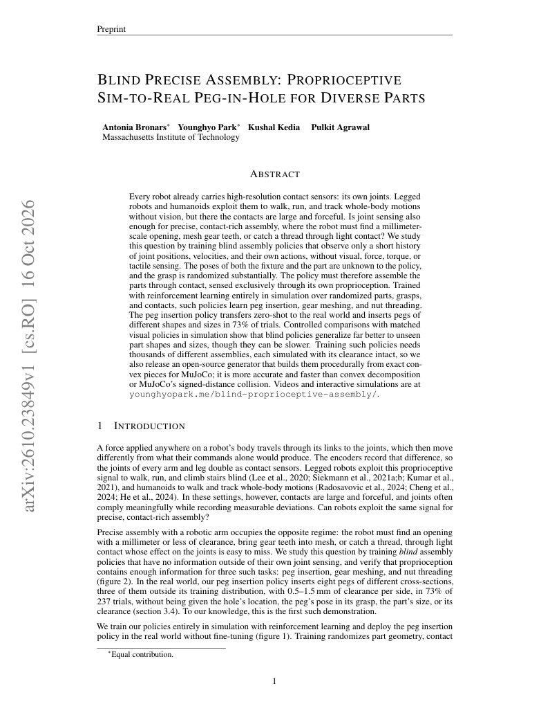
第 2 页Page 2PDF p.2

Figure 1: Blind insertion. A policy trained only in simulation inserts pegs of different shapes and sizes in the real world using only its joint encoders and previous actions.
Figure 1：盲态插入。仅在仿真中训练的策略仅使用其关节编码器和历史动作，即可在真实世界中插入不同形状和尺寸的销轴。
properties, fixture poses, and grasps, which can hold the part off-center on the finger pads and tilted in the grasp. The policy observes a 0.6 s history of joint positions and velocities, the gripper pose and twist computed from them, and its own previous actions. It receives no image and no force signal, so it can perceive contact and find the hole, shaft, or bolt only through its own motion (section 2).
特性、夹具位姿以及抓取进行随机化，抓取可能会使零件在指垫上发生偏心并在夹爪中倾斜。策略观测 0.6 s 的关节位置和速度历史、由其计算出的夹爪位姿与旋量（twist），以及自身历史动作。它不接收图像也不接收力信号，因此只能通过自身的运动来感知接触并寻找孔、轴或螺栓 (section 2)。
On all three tasks, probing the blind policies’ learned representations and comparing them with matched visual policies revealed two interesting properties of visually blind behaviors:
在所有三项任务中，探查盲态策略学习到的表征并将其与匹配的视觉策略进行对比，揭示了无视觉盲态行为的两个有趣特性：
- Visually blind yet intelligent. The learned behavior is not an open-loop pattern: its learned representation encoding its own proprioceptive inputs contains meaningful task-relevant information that the policy itself heavily relies on to adjust its behavior (section 3.2).
- 无视觉却具智能。学习到的行为并非开环模式：其编码自身本体感知输入的学习表征包含有意义的任务相关信息，策略本身极度依赖这些信息来调整自身行为 (section 3.2)。
- Proprioception generalizes better. Because a blind policy depends on the part only through its contacts, it degrades far less than vision on part shapes and sizes it has not seen during training (section 3.3).
- 本体感知泛化能力更强。由于盲态策略仅通过接触来依赖零件，因此面对训练期间未见过的零件形状和尺寸时，其性能退化程度远小于视觉策略 (section 3.3)。
Training for this robustness requires diverse parts: thousands of different assemblies, generated procedurally and simulated in parallel, each with its millimeter clearance intact. In MuJoCo (Todorov et al., 2012), building holes from convex primitives by hand does not scale to random shapes, and the automatic alternatives, convex decomposition and signed-distance-field (SDF) collision, are less accurate and slower at these clearances. We therefore built mjfit, which procedurally generates pegs and holes from any planar outline, as well as threads and gears, out of exact convex prisms. To summarize, our contributions are:
训练这种鲁棒性需要多样化的零件：数以千计不同的装配件，通过程序化生成并并行仿真，且每个装配件都完好保留其毫米级间隙。在 MuJoCo (Todorov et al., 2012) 中，手工用凸图元构建孔洞无法扩展到随机形状，而自动替代方案（凸分解和符号距离场 (SDF) 碰撞）在这些间隙下精度较低且速度较慢。因此，我们构建了 mjfit，它利用精确凸棱柱由任意平面轮廓程序化生成销轴和孔洞，以及螺纹和齿轮。总结而言，我们的贡献如下：
1. Blind policies, trained purely in simulation, that learn peg insertion, gear meshing, and nut threading from proprioception alone, given no fixture pose, grasp, or part model (section 3.1), with analyses showing that on all three tasks they search reactively, acting on the contact state their joint histories encode rather than following a fixed pattern (section 3.2), and that they generalize to unseen part shapes and sizes better than matched visual policies (section 3.3);
1. 纯在仿真中训练的盲态策略，在不提供夹具位姿、抓取或零件模型的情况下，仅通过本体感知即可学会孔轴插入、齿轮啮合和螺母螺纹拧入 (section 3.1)；分析表明，在所有三项任务中，它们均能反应式地进行搜索，依据关节历史所编码的接触状态做出反应，而非遵循固定模式 (section 3.2)，并且它们对未见过的零件形状和尺寸的泛化能力优于匹配的视觉策略 (section 3.3)；
2. The first sim-to-real policy for precise insertion from proprioception alone: trained only in simulation, the peg insertion policy transfers zero-shot to a real robot and inserts pegs of different cross-sections, including pegs outside its training distribution (section 3.4);
2. 首个仅凭本体感知实现精密插入的仿真到现实迁移策略：仅在仿真中训练，孔轴插入策略零样本迁移到真实机器人，并插入了不同截面的销轴，包括处于其训练分布之外的销轴 (section 3.4)；
3. mjfit, an open-source procedural generator of assemblies for MuJoCo (pegs and holes, threads, and gears) with exact convex collision geometry, which supplies the thousands of different training assemblies, and a benchmark against analytic ground truth in which it is more accurate and faster than convex decomposition and MuJoCo’s SDF collision (section 2.2).
3. mjfit，一个面向 MuJoCo 的开源装配件程序化生成器（孔轴、螺纹和齿轮），具有精确的凸碰撞几何形状，可提供数以千计不同的训练装配件；以及与解析真实值（ground truth）的基准对比，结果显示它比凸分解和 MuJoCo 的 SDF 碰撞更精确、更快速 (section 2.2)。
2 LEARNING BLIND ASSEMBLY
2 学习盲态装配
We train blind policies for three assemblies that mjfit generates: peg insertion, gear meshing, and nut threading. We describe the tasks (section 2.1); how mjfit, our open-source procedural generator for MuJoCo, supplies thousands of different assemblies with exact convex collision geometry that
我们针对 mjfit 生成的三种装配件训练盲态策略：孔轴插入、齿轮啮合和螺母螺纹拧入。我们介绍了任务 (section 2.1)；我们面向 MuJoCo 的开源程序化生成器 mjfit 如何提供数千种具有精确凸碰撞几何形状且
展开第 2 页原版整页（含全部图表、公式与页眉页脚）
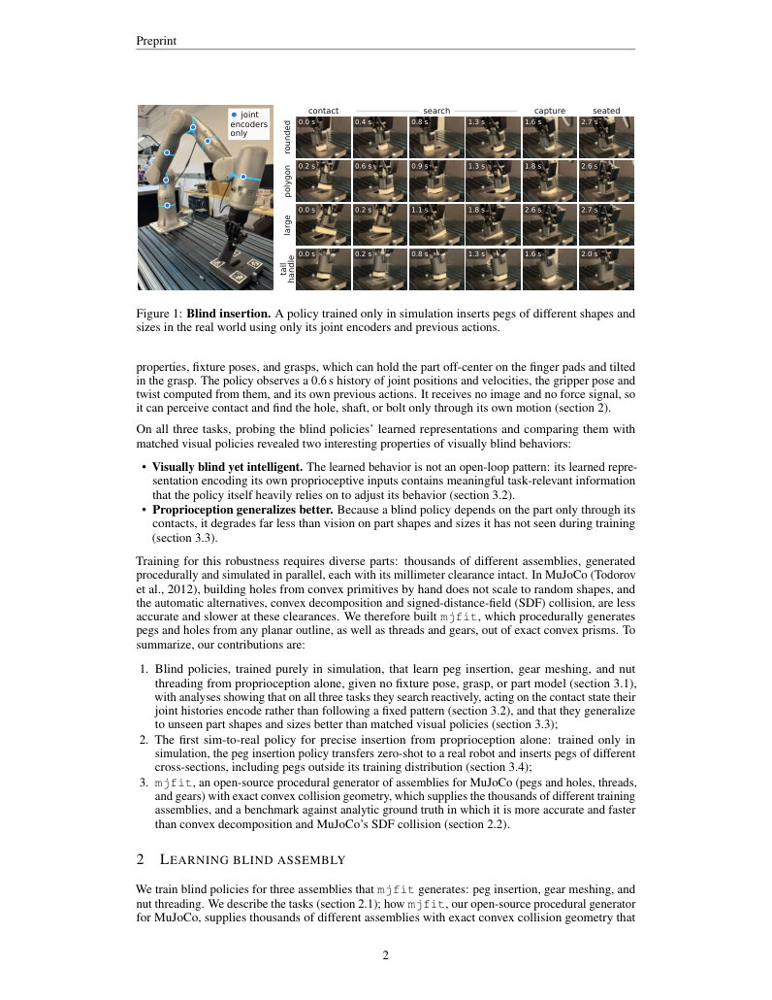
第 3 页Page 3PDF p.3
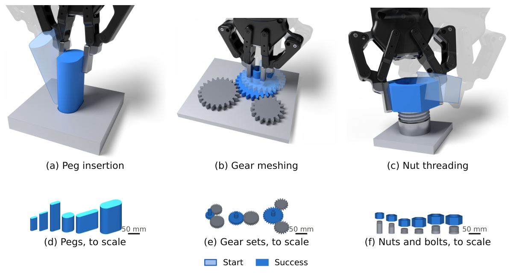
Figure 2: Peg insertion, gear meshing, and nut threading. (a–c) A start of each task, faded, and the same grasp at success: the peg seated in its hole, the gear seated on its shaft in mesh with both anchor gears, and the nut turned until its thread has caught. (d–f) Stadium pegs, gear sets, and nuts and bolts generated by mjfit and used for training, to scale.
Figure 2：孔轴插入、齿轮啮合和螺母螺纹拧入。(a–c) 各项任务的起始状态（淡化显示）以及成功时的同一抓取：销轴就位在孔中、齿轮就位于其轴上并与两个固定齿轮啮合，以及螺母旋转至其螺纹咬合。(d–f) 由 mjfit 生成并用于训练的跑道形（stadium）销轴、齿轮组以及螺栓螺母，按比例绘制。
preserves their clearances (section 2.2); and the policy, whose auxiliary contact supervision makes learning faster without giving the actor any privileged information (section 2.3; figure 14).
保留了其间隙的装配件 (section 2.2)；以及策略本身，其辅助接触监督在不向行动器（actor）提供任何特权信息的情况下加快了学习速度 (section 2.3; figure 14)。
2.1 TASKS
2.1 任务
In all three tasks (figure 2), a 7-DOF robot arm equipped with a parallel jaw gripper holds a part and must assemble it with a fixture that can sit almost anywhere in its workspace, and tilted (figure 3a). The part’s geometry, its pose in the grasp (figure 3b), and the contact properties are randomized and not observed by policy (Table 1). Episodes start with the part touching the fixture but misaligned, and succeed once it is fully assembled. This requires the policy to both search for alignment through contact, and then perform the assembly, based on its joint position feedback alone.
在所有三项任务中 (figure 2)，一台配备平行动作夹爪的 7 自由度机械臂持握零件，并必须将其与可能位于其工作空间几乎任何位置且呈倾斜状态的夹具完成装配 (figure 3a)。零件的几何形状、其在抓取中的位姿 (figure 3b) 以及接触特性均经过随机化且不被策略观测 (Table 1)。每个回合（episode）开始时零件与夹具接触但未对齐，一旦完全装配即判定为成功。这要求策略仅基于其关节位置反馈，既能通过接触搜索对齐，又能随后执行装配。
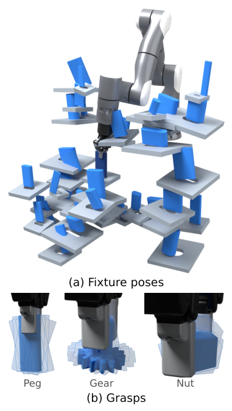
- Peg insertion: the pegs are prisms with varying cross-section, size, aspect ratio, mass, and length, with 1.0–1.5 mm of clearance per side (Appendix A). Pegs start typically around 2 cm from the hole, tilted far more than the clearance admits, and succeed when the peg is seated in the hole.
- 孔轴插入：销轴为截面、尺寸、长宽比、质量和长度各异的棱柱体，单侧间隙为 1.0–1.5 mm (Appendix A)。销轴初始位置通常距孔约 2 cm，倾斜角度远超间隙所允许的范围，当销轴就位在孔中时判定为成功。
- Gear meshing: spur gears of varying size and tooth count must slide down a shaft into mesh with one or two anchor gears that turn on their own axles, with 0.2–0.6 mm of backlash. Episodes start with the gear in contact with the shaft tip, but misaligned and with its teeth out of phase with the anchors’, and succeed when the gear is seated on the shaft with teeth meshed.
- 齿轮啮合：尺寸和齿数各异的正齿轮必须沿轴向下滑动，与绕自身轴旋转的一个或两个固定齿轮（anchor gears）啮合，齿隙（backlash）为 0.2–0.6 mm。回合开始时齿轮与轴端接触，但未对齐且其轮齿与固定齿轮不同相，当齿轮就位于轴上且轮齿啮合时判定为成功。
- Nut threading: metric nuts from M24 to M42 must thread onto a bolt with 0.05–0.2 mm of thread clearance. Episodes start with the nut resting on the bolt’s tip, off its axis and tilted, and succeed a quarter turn after the thread catches.
- 螺母螺纹拧入：M24 至 M42 的公制螺母必须拧到螺栓上，螺纹间隙为 0.05–0.2 mm。回合开始时螺母置于螺栓顶端，偏离其轴线并倾斜，在螺纹咬合后旋转四分之一圈判定为成功。
Figure 3: Training fixture poses and grasps. Gear and bolt fixtures span the peg’s ranges.
Figure 3：训练夹具位姿与抓取。齿轮和螺栓夹具覆盖了销轴的范围。
展开第 3 页原版整页（含全部图表、公式与页眉页脚）
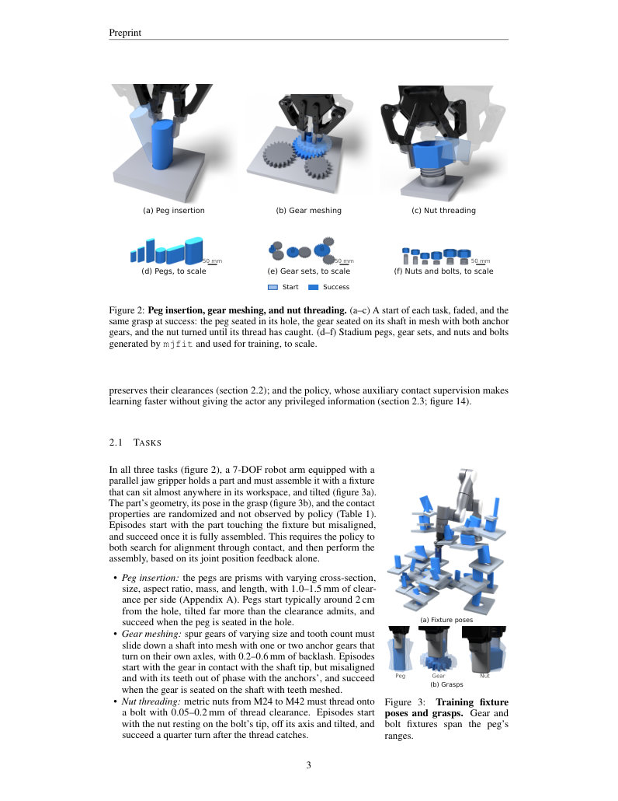
第 4 页Page 4PDF p.4
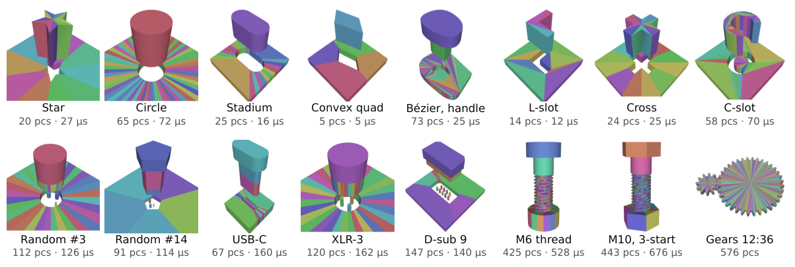
Figure 4: Assets generated by mjfit one color per convex piece of the generated collision geometry. Labels give the number of convex pieces (pcs) and the CPU time per physics step with the parts in contact.
Figure 4：由 mjfit 生成的资产，生成的碰撞几何体中每个凸块对应一种颜色。标签给出了凸块数量（pcs）以及零件接触时每个物理步的 CPU 时间。
2.2 SIMULATING TIGHT INSERTION AT SCALE
2.2 大规模紧密插入仿真
Training on this distribution means simulating thousands of parallel worlds that each hold a different, randomly generated assembly, with per-side clearances down to 0.5 mm. MuJoCo collides meshes through their convex hulls, so a concave hole must be given an SDF or built from convex pieces, which simulation benchmarks assemble from boxes by hand (Zhu et al., 2020; Tao et al., 2024; Zakka et al., 2025).
在此分布上进行训练意味着要仿真数以千计的并行世界，每个世界包含一个不同的、随机生成的装配件，且单侧间隙低至 0.5 mm。MuJoCo 通过网格的凸包进行碰撞检测，因此凹孔必须赋予 SDF 或由凸块构建，现有的仿真基准通常通过手工拼装盒状图元来实现这一点 (Zhu et al., 2020; Tao et al., 2024; Zakka et al., 2025)。
Exact convex decomposition. mjfit automates the hand-built hole and generalizes it to arbitrary outlines. Given the planar outline of a hole, optionally with islands such as connector pins, it emits a ready-to-simulate MJCF model in which every contact surface is a MuJoCo primitive or a convex prism (figure 4). The plate around the hole is split into convex polygons and extruded; the peg is the hole outline offset inward by the clearance, so every peg edge sits exactly the clearance from its hole edge, and islands become pockets in a hollow peg. Curves are tessellated by a circumscribed polygon, so the wall never intrudes into the true hole, as it does in rings of boxes that inscribe the circle (Zhu et al., 2020); the only error is extra play at the corners, \(c\,(1/\cos(\pi/n)-1)\) for a circle of \(n\) sides at radial clearance \(c\). Because the construction knows which region must stay empty, the user specifies the clearance directly rather than tuning a concavity tolerance and checking the result. Companion generators apply the same idea to bolt–nut pairs and spur gears, and a sampler draws random outlines, islands, and dimensions, so one training run can hold thousands of different assemblies.
精确凸分解。mjfit 实现了手工构建孔的自动化，并将其推广到任意轮廓。给定孔的平面轮廓（可包含接插件引脚等孤岛），它会生成一个立即可供仿真的 MJCF 模型，其中每个接触表面都是 MuJoCo 图元或凸棱柱 (figure 4)。孔周围的平板被分割为凸多边形并进行拉伸；销轴则是将孔轮廓向内偏移间隙距离所得，因此销轴的每条边与对应的孔边缘严格保持该间隙，而孤岛则成为空心销轴中的凹槽（pockets）。曲线通过外切多边形进行镶嵌（tessellated），因此孔壁绝不会侵入真实孔的内部（内接于圆的环状盒图元则会出现这种侵入现象 (Zhu et al., 2020)）；唯一的误差是边角处额外的空隙（play），对于径向间隙为 \(c\) 的 \(n\) 边形圆，该误差为 \(c\,(1/\cos(\pi/n)-1)\)。由于这种构造方式预先获知了哪些区域必须保持为空，用户可直接指定间隙，而无需调整凹度容差并检查结果。配套的生成器将相同的思路应用于螺栓-螺母副和正齿轮，并且采样器可以随机抽取轮廓、孤岛和尺寸，使得单次训练运行即可包含数千种不同的装配件。
Benchmark. We compare against the three auOurs CoACD V-HACD tomatic ways to give MuJoCo a concave hole: CoACD (Wei et al., 2022), V-HACD (Mamou & Ghorbel, 2009), and MuJoCo’s native mesh SDF, each swept over its granularity setting. The test is a 16 mm round or square hole with clearance 15 pieces 10 pieces 64 pieces down to 20 µm; we measure each method’s error against its time per step, on CPU and on GPU with MuJoCo Warp (Google DeepMind and NVIDIA, 2025) (figure 6; Appendix B). Approximate decomposition tolerates concavity far larger than an 151 pieces 122 pieces 64 pieces assembly’s clearance, so it leaves wall material Figure 5: Same parts, three decompositions , inside the hole (figure 5); refining it narrows the one color per convex piece (Ø16 mm plate; M10 error but never closes it (figure 6a). Mesh SDF misses contacts and rounds the rim. These errors nut cut open). Ours errs only toward extra play; CoACD and V-HACD put material inside the change outcomes: a centered peg stops on the rim hole and fill the nut’s 0.1 mm thread clearance. or jams on every baseline’s default plate, but falls cleanly through ours (figure 6c). mjfit is also an order of magnitude faster than mesh SDF on CPU at equal or better accuracy (Table 4), and has the best speed–accuracy trade-off on GPU (figure 6b).
基准测试。我们将为 MuJoCo 提供凹孔的三种自动方法（Ours、CoACD、V-HACD）进行对比：CoACD (Wei et al., 2022)、V-HACD (Mamou & Ghorbel, 2009) 以及 MuJoCo 原生网格 SDF，每种方法均遍历其粒度设置。测试采用间隙低至 20 µm 的 16 mm 圆孔或方孔（15 块、10 块、64 块）；我们在 CPU 以及使用 MuJoCo Warp (Google DeepMind and NVIDIA, 2025) 的 GPU 上衡量了每种方法的误差与每步时间的关系 (figure 6; Appendix B)。近似分解容忍的凹度远大于装配件的间隙（151 块、122 块、64 块），因此会在孔内部残留孔壁材料（Figure 5：相同零件，三种分解，每个凸块一种颜色（Ø16 mm 孔板；剖开的 M10 螺母）。我们的方法误差仅偏向于产生额外空隙；CoACD 和 V-HACD 则在孔内部留有材料并填满了螺母 0.1 mm 的螺纹间隙）；对其细化能缩小误差但绝无法消除误差 (figure 6a)。网格 SDF 会遗漏接触并使边缘变圆。这些误差改变了结果：居中的销轴在每个基线的默认板上都会停留在边缘或发生卡滞，但在我们的板上则能顺畅穿过 (figure 6c)。在精度相当或更高的情况下，mjfit 在 CPU 上也比网格 SDF 快一个数量级 (Table 4)，并在 GPU 上实现了最佳的速度-精度权衡 (figure 6b)。
展开第 4 页原版整页（含全部图表、公式与页眉页脚）
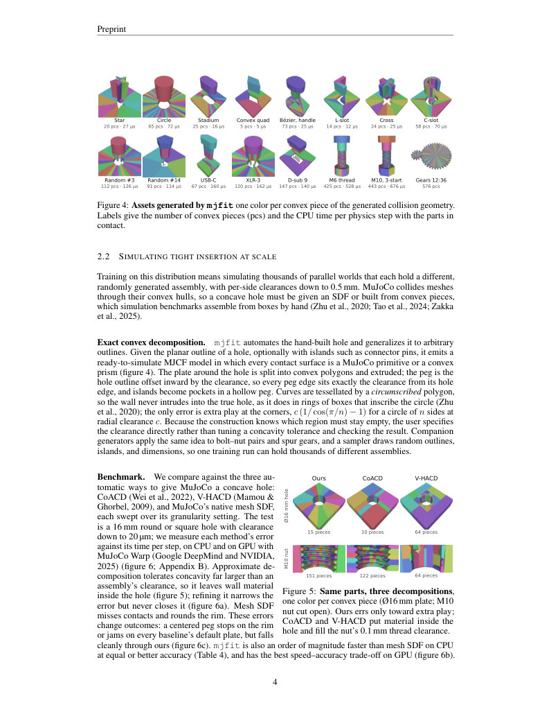
第 5 页Page 5PDF p.5
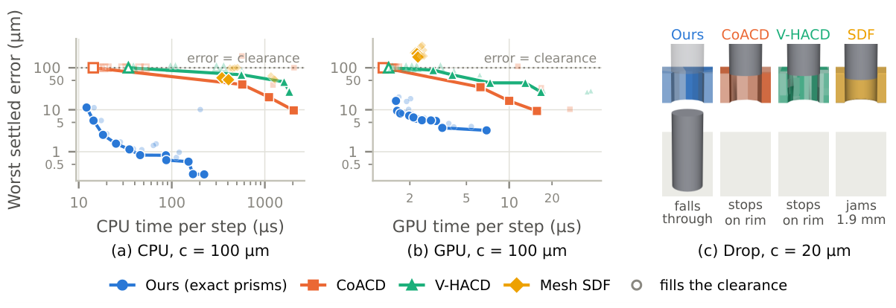
Figure 6: Speed against accuracy for a 16 mm round peg with 100 µm clearance, (a) on CPU, one environment on one thread, and (b) on GPU, per environment step across 256 MuJoCo Warp worlds, with the error also measured on Warp. Each line is one method’s Pareto front over all its settings; lower left is better, and hollow markers fill the clearance (dotted line). (c) The peg, centered and aligned, dropped from 1 mm above each method’s default plate and shown 0.2 s later.
Figure 6：100 µm 间隙的 16 mm 圆形销轴的速度与精度对比，(a) 在 CPU 上，单线程单个环境；(b) 在 GPU 上，跨 256 个 MuJoCo Warp 环境的每步时间，误差同样在 Warp 上测量。每条线代表一种方法在其所有设置下的帕累托前沿（Pareto front）；越靠近左下方越好，空心标记表示填塞了间隙（虚线）。(c) 居中且对齐的销轴从各方法默认板上方 1 mm 处落下，显示 0.2 s 后的状态。
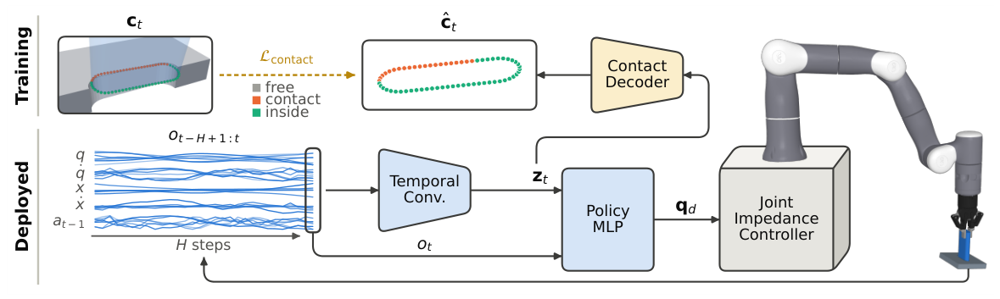
Figure 7: Policy Architecture . A temporal convolution compresses the last \(H=30\) proprioceptive observations \(o_t\) (joint positions \(q\) and velocities \(\dot q\), gripper pose \(x\) and twist \(\dot x\), and the previous action \(a_{t-1}\)) into a latent \(z_t\), and an MLP maps \(z_t\) and the current observation \(o_t\) to joint targets \(q_d\) for a joint impedance controller. During training, we provide contact supervision from privileged simulator state. A contact decoder (amber) predicts the contact state (\(\hat c_t\)) from \(z_t\). Its cross-entropy \(\mathcal{L}_\mathrm{contact}\) with the simulator’s labels \(c_t\) (left, near half of the fixture cut away) trains the encoder, but \(\hat c_t\) never reaches the policy.
Figure 7：策略架构。时序卷积将最近 \(H=30\) 步本体感知观测 \(o_t\)（关节位置 \(q\) 与速度 \(\dot q\)、夹爪位姿 \(x\) 与旋量 \(\dot x\)，以及上一步动作 \(a_{t-1}\)）压缩为潜在变量 \(z_t\)，多层感知机（MLP）将 \(z_t\) 和当前观测 \(o_t\) 映射为关节阻抗控制器的关节目标 \(q_d\)。在训练期间，我们利用特权仿真器状态提供接触监督。接触解码器（琥珀色）从 \(z_t\) 预测接触状态 (\(\hat c_t\))。它与仿真器标签 \(c_t\)（左侧，切除夹具近半部分显示）的交叉熵 \(\mathcal{L}_\mathrm{contact}\) 用于训练编码器，但 \(\hat c_t\) 绝不会传递给策略。
Each assembly is only a few dozen convex pieces, so every one of our 12,288 parallel training worlds (Zakka et al., 2026) can hold a different one.
每个装配件仅由几十个凸块组成，因此我们的 12,288 个并行训练世界 (Zakka et al., 2026) 中的每一个都可以包含一个不同的装配件。
2.3 POLICY AND TRAINING
2.3 策略与训练
Policy. At each step, the actor (figure 7) observes its joint positions and velocities, the gripper pose and twist computed from them by forward kinematics, and its previous action. It never receives the hole pose, the part geometry, a wrench estimate, or an image. A temporal convolutional encoder compresses the last 0.6 s of observations into a latent, and an MLP maps the latent and the current observation to joint-position increments. A joint impedance controller tracks them on an arm model whose armature, damping, and friction were identified from real-world measurements. Additional training details in Appendix A.
策略。在每个时间步，行动器 (figure 7) 观测其关节位置和速度、通过正向运动学由其计算出的夹爪位姿与旋量，以及其上一步动作。它绝不接收孔位姿、零件几何形状、力/力矩（wrench）估计或图像。时序卷积编码器将最近 0.6 s 的观测压缩为一个潜在表征，MLP 将该潜在表征和当前观测映射为关节位置增量。关节阻抗控制器在一个机械臂模型上跟踪这些增量，该模型的电枢（armature）、阻尼和摩擦力均通过真实世界测量辨识获得。更多训练细节见 Appendix A。
Training. We use PPO (Schulman et al., 2017) with a sparse reward: a bonus on success and onetime bonuses for intermediate milestones, such as the peg’s first capture by the opening (Appendix A.1 gives the gear’s and nut’s). Two training-only signals speed up learning from the sparse reward without giving the actor privileged information: an asymmetric critic (Pinto et al., 2018) that also sees the part’s pose relative to the fixture and the true contact labels, and the contact supervision described next. Randomizing dynamics and geometry (Tobin et al., 2017; Peng et al., 2018) covers the ranges of Table 1.
训练。我们使用带有稀疏奖励的 PPO (Schulman et al., 2017)：包含成功奖励以及针对中间里程碑的一次性奖励，例如销轴首次被孔口捕获（Appendix A.1 给出了齿轮和螺母的对应里程碑）。两种仅在训练时使用的信号加速了从稀疏奖励中的学习，而无需向行动器提供特权信息：一是非对称评论器（critic） (Pinto et al., 2018)，它同时能观测零件相对于夹具的位姿以及真实的接触标签；二是下文所述的接触监督。动力学和几何形状的随机化 (Tobin et al., 2017; Peng et al., 2018) 覆盖了 Table 1 中的范围。
展开第 5 页原版整页（含全部图表、公式与页眉页脚）
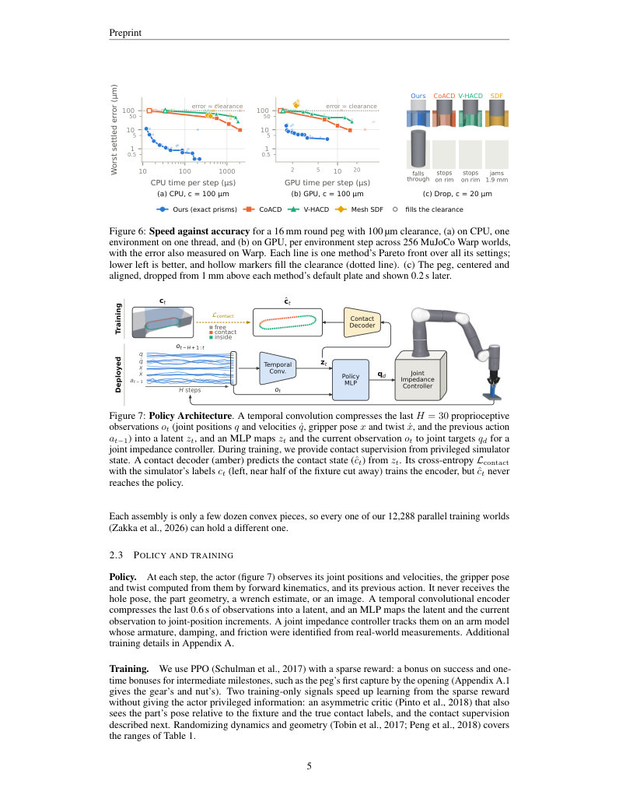
第 6 页Page 6PDF p.6
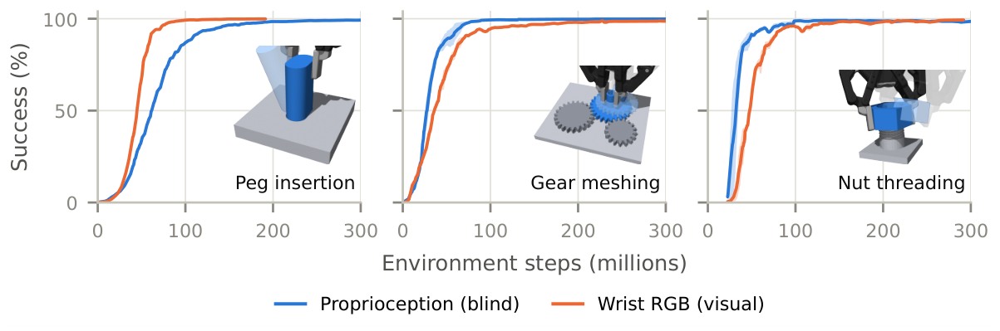
Figure 8: Proprioception alone is enough to learn all three tasks. Blind policies, which sense only their own joints, reach the same near-perfect training success as visual policies with a wrist camera. Lines are the mean of two training seeds.
Figure 8：仅靠本体感知就足以学会全部三项任务。仅感知自身关节的盲态策略达到了与配备腕部相机的视觉策略相同且近乎完美的训练成功率。曲线代表两个训练随机种子的均值。
Contact supervision. A blind policy has to infer contact from how the arm moves. To give that inference a dense training signal, we supervise the actor’s latent with the contact state it cannot observe. At every step, the simulator labels points sampled on the mating features of the part and fixture, as free, touching but misaligned, or aligned (figure 7, top; Appendix A details each task’s labels). A small contact decoder predicts these labels from the latent \(z_t\), and its class-weighted cross-entropy is added to the PPO loss (Jaderberg et al., 2017). The gradient of this loss trains the encoder, but the prediction never enters the policy, so nothing privileged reaches the actor and the decoder is dropped at deployment.
接触监督。盲态策略必须从机械臂的运动方式中推断接触。为了给这种推断提供密集的训练信号，我们使用行动器无法观测到的接触状态来监督其潜在表征。在每个时间步，仿真器将零件和夹具配合特征上采样的点标记为自由（free）、接触但未对齐（touching but misaligned）或已对齐（aligned） (figure 7 顶部；Appendix A 详述了每项任务的标签)。一个小型接触解码器从潜在变量 \(z_t\) 预测这些标签，其类别加权交叉熵被添加到 PPO 损失中 (Jaderberg et al., 2017)。该损失的梯度用于训练编码器，但该预测绝不会输入给策略，因此任何特权信息都不会传递给行动器，且解码器在部署时被舍弃。
Visual policies. To isolate the sensing modality, we train visual policies with the same task, resets, randomization, reward, actions, and success check. A camera rigidly mounted on the wrist renders a 64\(\times\)64 RGB image of the held part and the fixture. The visual policy sees only images, over the same 0.6 s history, through a compact CNN.
视觉策略。为单独隔离出传感模态的影响，我们采用相同的任务、重置、随机化、奖励、动作和成功判定来训练视觉策略。刚性安装在腕部的相机会渲染出所夹持零件与固定夹具的 64\(\times\)64 RGB 图像。该视觉策略仅通过一个紧凑型 CNN 观测同样在 0.6 s 历史时域内的图像。
3 RESULTS
3 结果
We design experiments to answer the following questions:
我们设计实验来回答以下问题：
1. (section 3.1) Can a policy that senses only its own joints learn precise assembly tasks including peg insertion, gear meshing, and nut threading?
1.（3.1 节）仅感知自身关节信息的策略能否学会包括销钉插入、齿轮啮合和螺母旋接在内的精密装配任务？
2. (section 3.2) Do blind policies learn intelligent, contact-reactive search, or is it learning scripted patterns?
2.（3.2 节）盲策略学到的是智能的接触反应式搜索，还是机械预设的脚本化模式？
3. (section 3.3) Do blind policies generalize better than visual policies to part geometries outside the training distribution?
3.（3.3 节）面对训练分布之外的零件几何形状，盲策略的泛化能力是否优于视觉策略？
4. (section 3.4) Can blind policies that rely on contact-rich search be transferred zero shot with high fidelity to the real world?
4.（3.4 节）依赖丰富接触搜索的盲策略能否零样本、高保真地迁移到现实世界？
3.1 PROPRIOCEPTION IS SUFFICIENT
3.1 本体感觉即已足够
All three tasks achieve near-perfect success on in-distribution geometries (figure 11, left). The joint history alone therefore carries enough information about contact to find an opening, bring teeth into mesh, and engage a thread.
在分布内几何形状上，所有三项任务均取得了近乎完美的成功率（图 11，左）。因此，仅凭关节历史信息就蕴含了关于接触的充足信息，足以找到开孔、使轮齿啮合以及咬合螺纹。
Compared with visual policies, which can typically observe the poses of the grasped and mating parts directly, blind policies may be slower. On peg insertion, the blind policy has to search for the opening through contact, so it takes a less direct path and seats later (figure 9a, b) than a visual policy. The gap is smaller on the other two tasks (Appendix C), plausibly because the grasped part occludes more of the mating part from the camera’s view, so the visual policy, too, has to search to some extent.
相比于通常可以直接观察到所夹持零件与配对零件位姿的视觉策略，盲策略的速度可能会更慢。在销钉插入任务中，盲策略必须通过接触来搜索开孔，因此相比视觉策略，它所走的路径不够直接，完全就位的时间也更晚（图 9a、b）。而在另外两项任务中，这一差距更小（附录 C），这很可能是因为被夹持的零件在相机视野中对配对零件造成了更大程度的遮挡，以至于视觉策略在某种程度上也必须进行搜索。
展开第 6 页原版整页（含全部图表、公式与页眉页脚）
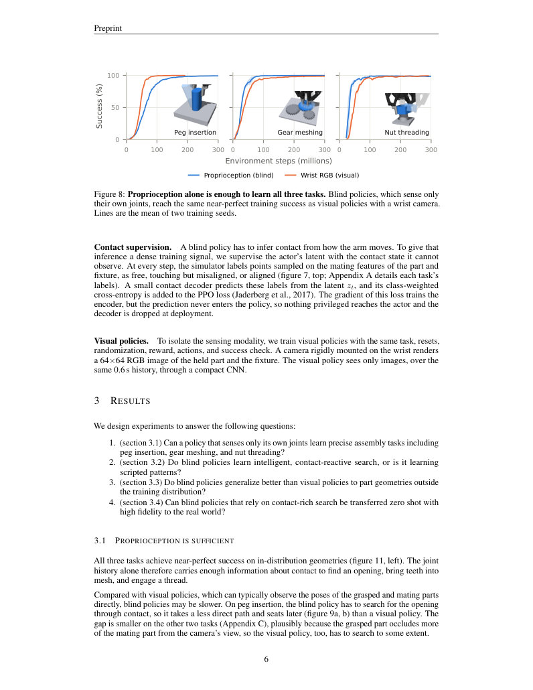
第 7 页Page 7PDF p.7
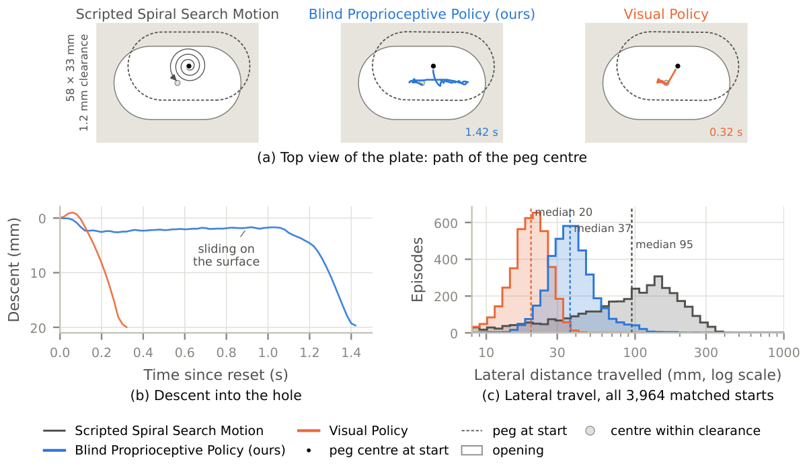
Figure 9: Proprioception guides efficient search without vision. Because the blind policy must search through contact, it follows a less direct path and seats later than the visual policy (a, b). Nonetheless, it travels far less (c) than an optimistic scripted spiral search baseline (Chhatpar & Branicky, 2001).
图 9：本体感觉在无视觉情况下引导高效搜索。由于盲策略必须通过接触进行搜索，因此与视觉策略相比，其移动路径更迂回且就位更晚（a、b）。尽管如此，与乐观设定的脚本化螺旋搜索基线（Chhatpar & Branicky, 2001）相比，其移动距离要短得多（c）。
3.2 VISUALLY BLIND BUT INTELLIGENT
3.2 虽无视觉却具智能
If blind policies search reactively rather than follow a script, their history latent \(z_t\), through which everything the actor knows about the past passes (figure 7), must encode the state of contact. To test this, we roll out each policy in simulation and label every state with one of seven modes of its task, computed from the privileged part pose. For the peg, these are lifted, beside the plate, searching far from the opening or near it, partly engaged, and fully inside, either moving or stuck; the gear’s and nut’s modes follow similar stages of their tasks (Appendix C). We then fit a linear probe that predicts the mode from \(z_t\).
如果盲策略是通过反应式方式搜索而非遵循预设脚本，那么其历史潜在表征 \(z_t\)（Actor 获取过去所有信息的必经通道，图 7）就必须对接触状态进行编码。为了对此进行检验，我们在仿真中对各个策略进行 rollout，并利用基于特权零件位姿计算出的任务七种模态之一标记每个状态。对于销钉而言，这些模态分别为：抬起、位于平板旁、在远离或靠近开孔处搜索、部分插入，以及完全进入（分为运动中或卡滞两种情况）；齿轮和螺母的模态也对应其任务的相似阶段（附录 C）。随后，我们拟合了一个从 \(z_t\) 预测该模态的线性探针。
On all three tasks, the probe separates modes that call for different actions, such as lifted, engaged, and stuck (figure 10), and does so more accurately from \(z_t\) than from the current observation alone (accuracy 61–73%, against 41–64%; chance 14%). Furthermore, the policy heavily relies on these inferred contact states to choose actions. Swapping in the latent of a state in another mode changes the action 1.3–3.0\(\times\) as much as a swap within the same mode (figure 15; Appendix C). Fitted only in simulation, the peg probe decodes the same sequence of modes on the real robot (figure 10a).
在全部三项任务中，该探针均能将需要不同动作的模态（例如抬起、咬合和卡滞）清晰区分开（图 10），并且利用 \(z_t\) 预测的准确率显著高于仅凭当前观测的预测准确率（准确率为 61–73%，对比仅凭当前观测的 41–64%；随机猜测概率为 14%）。此外，策略在选择动作时严重依赖这些推断出的接触状态。若换入另一模态下状态的潜在表征，其导致的动作变化是在同一模态内替换的 1.3–3.0\(\times\)（图 15；附录 C）。虽然仅在仿真中完成拟合，销钉探针在真实机器人上也解码出了相同的模态序列（图 10a）。
Reacting to contacts also makes a blind assembly efficient. A fixed pattern sweeps the same path regardless of what the arm feels, whereas a reactive policy can use the information gathered through contact, such as the peg catching the rim of the opening, to steer its search. We test this on peg insertion, where a scripted blind baseline is standard: spiral search, which moves the peg outward along a spiral until it drops into the hole, is a common strategy for insertion under position uncertainty in industrial assembly (Chhatpar & Branicky, 2001; Park et al., 2017; Marvel et al., 2018). From the same starts, the blind policy travels a median 37 mm before seating, against 95 mm for an optimistic spiral that starts flush with the hole opening, and is given the peg’s orientation and the best starting direction (figure 9c).
对接触做出反应同样提升了盲装配的效率。固定的扫描模式无论机械臂感知到什么都会沿着相同路径扫动，而反应式策略则能利用通过接触收集到的信息（例如销钉卡入孔边缘）来引导其搜索方向。我们在销钉插入任务上对此进行了测试，该任务中通常以脚本化的盲基线作为标准：螺旋搜索沿着螺旋线由内向外移动销钉直到其落入孔中，是工业装配中位置存在不确定性时常用的插入策略（Chhatpar & Branicky, 2001; Park et al., 2017; Marvel et al., 2018）。在相同的起始位置下，盲策略在完全就位前的移动距离中位数为 37 mm，而对于与开孔齐平起始、且已知销钉朝向和最佳起始搜索方向的乐观螺旋搜索，该移动距离为 95 mm（图 9c）。
3.3 GENERALIZATION TO UNSEEN PARTS
3.3 对未见零件的泛化
On all three tasks, both blind policies and visual policies are reliable on the parts they were trained on. However, the blind policy is more reliable on assemblies sampled from outside the training distribution (figure 11). The visual policy is particularly vulnerable to geometry changes that significantly change
在所有三项任务中，盲策略和视觉策略在各自训练所用的零件上均表现可靠。然而，对于从训练分布之外采样的装配组件，盲策略表现得更为可靠（图 11）。视觉策略尤其容易受到那些显著改变
展开第 7 页原版整页（含全部图表、公式与页眉页脚）
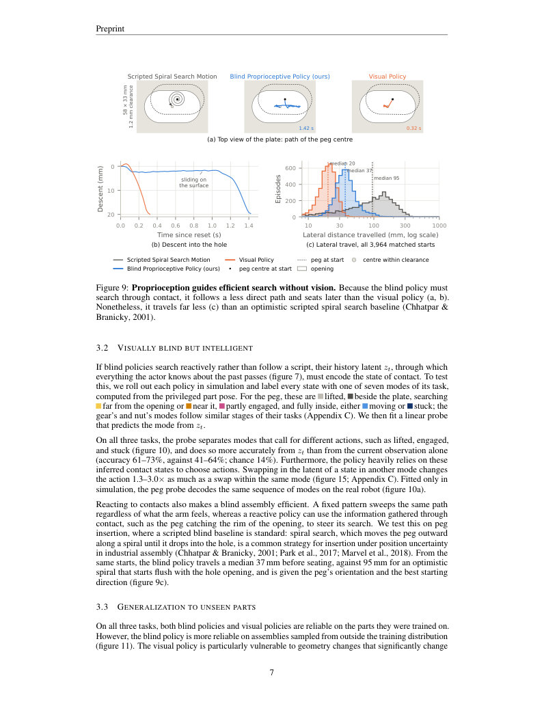
第 8 页Page 8PDF p.8
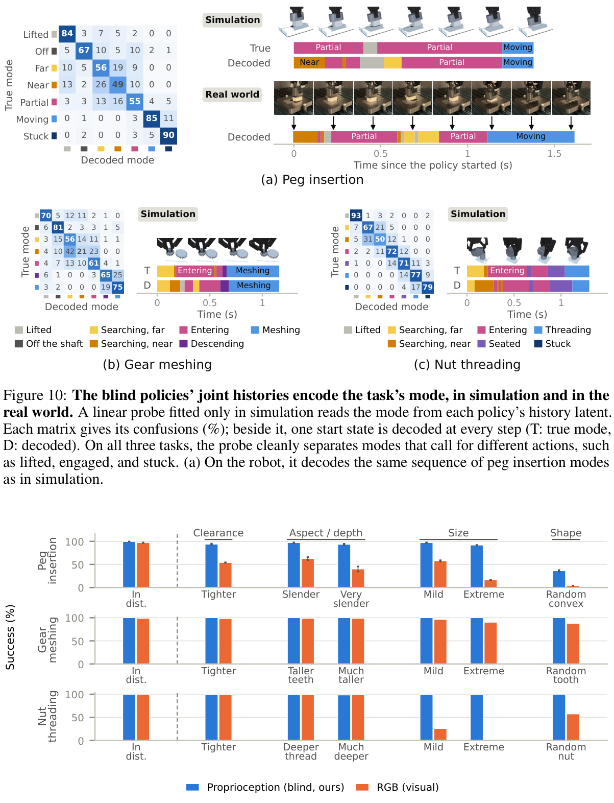
Figure 10: The blind policies’ joint histories encode the task’s mode, in simulation and in the real world. A linear probe fitted only in simulation reads the mode from each policy’s history latent. Each matrix gives its confusions (%); beside it, one start state is decoded at every step (T: true mode, D: decoded). On all three tasks, the probe cleanly separates modes that call for different actions, such as lifted, engaged, and stuck. (a) On the robot, it decodes the same sequence of peg insertion modes as in simulation.
图 10：盲策略的关节历史在仿真和真实世界中均编码了任务模态。仅在仿真中拟合的线性探针可从各个策略的历史潜在表征中读取模态。每个混淆矩阵给出了其混淆率（%）；其旁展示了一个起始状态在每一步的解码结果（T：真实模态，D：解码模态）。在全部三项任务中，探针均能干净利落地分离需要不同动作的模态（如抬起、咬合和卡滞）。(a) 在真实机器人上，它解码出了与仿真中相同的销钉插入模态序列。
Figure 11: Proprioceptive policies remain more robust to geometric variation. Success of the blind and visual policies (both with a 30-step history) on each task, in distribution (left of the dashed line) and on unseen parts, each widening one object property beyond its training range while the others stay within theirs.
图 11：本体感知策略对几何变化保持着更高的鲁棒性。盲策略与视觉策略（均包含 30 步历史）在各项任务中的成功率：分布内（虚线左侧）以及在未见零件上的测试，其中未见零件每次将物体的一种属性拓展至训练范围之外，同时其余属性保持在各自范围内。
how the parts look; it consistently underperforms the blind policy across tasks when evaluated on parts that are of a different shape, or extremely different size, than the training distribution. The visual policy learns to align visual features which may not appear in held-out assemblies. The blind policy, on the other hand, learns a searching strategy that is much more transferable.
零件外观的几何变化的影响；当在形状不同或尺寸与训练分布差异极大的零件上进行评估时，它在各项任务中的表现均持续逊色于盲策略。视觉策略学到的是对齐视觉特征，而这些特征可能不会出现在留置的未见装配体中。相反，盲策略学到的是一种具有强得多迁移能力的搜索策略。
展开第 8 页原版整页（含全部图表、公式与页眉页脚）
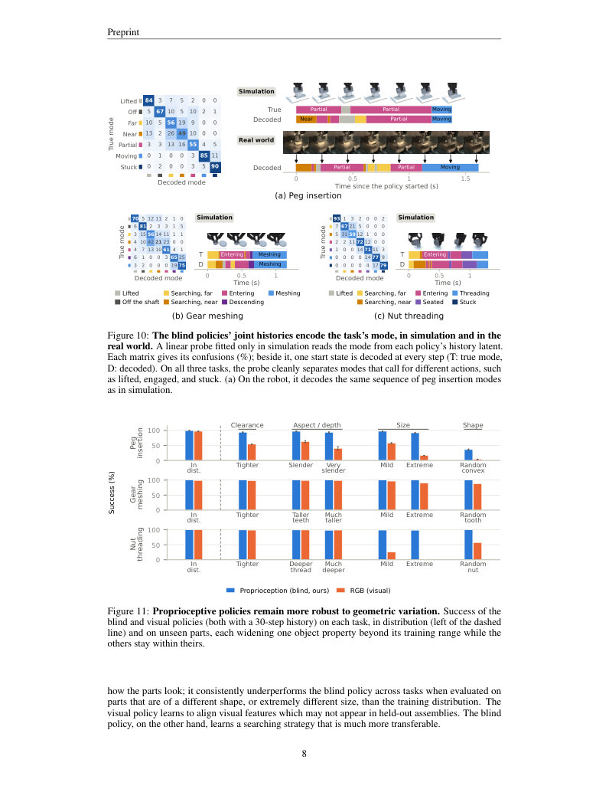
第 9 页Page 9PDF p.9
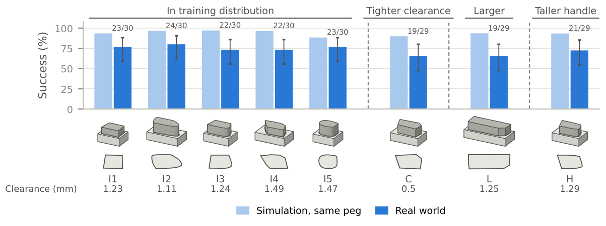
Figure 12: Real-world results of the blind policy, with no fine-tuning, beside the same policy in simulation on the same peg (2,048 episodes). Error bars are 95% Wilson intervals. Details in Appendix C.
图 12：盲策略在无需微调的情况下的真实世界结果，旁边附有同一策略在同一销钉上的仿真结果（2,048 个回合）。误差棒为 95% Wilson 置信区间。详见附录 C。
3.4 ZERO-SHOT TRANSFER TO THE REAL WORLD
3.4 零样本迁移至现实世界
Setup. We deploy the frozen blind policy on a Flexiv Rizon 4S with a Robotiq 2F-85 at 50 Hz, with no real-world data or fine-tuning. It receives only encoder-derived joint and gripper state; no camera, force/torque sensor, or hole pose enters the policy. The deployed policy is a policy trained on random convex, smooth, and mixed cross-sections under a handle (Table 2). We test eight 3D-printed pegs (figure 12): five in-distribution objects, and three that are drawn from outside the training distribution, a tighter clearance (0.5 mm per side), a larger cross-section, and a taller handle. Each trial starts from a start state drawn from the simulated reset distribution, with the peg grasped at a randomized position and tilt and touching the fixture near the hole. An operator marks a trial as successful once the peg is seated.
实验设置。我们将冻结的盲策略以 50 Hz 的频率部署在搭载 Robotiq 2F-85 夹爪的 Flexiv Rizon 4S 机械臂上，不使用任何真实世界数据，亦不进行微调。该策略仅接收由编码器推导出的关节及夹爪状态；没有相机、力/力矩传感器或孔位姿输入策略。所部署的策略是在把手下具有随机凸形、平滑及混合截面的零件上训练得到的（表 2）。我们测试了八个 3D 打印的销钉（图 12）：五个为分布内物体，三个来自训练分布之外——更紧的间隙（单边 0.5 mm）、更大的截面以及更高的把手。每次试验均从仿真重置分布中采样的初始状态开始，销钉以随机的位置和倾角被夹持，并接触孔附近的工装夹具。一旦销钉完全就位，操作员便将该次试验标记为成功。
Results. One policy, with no parameter changes, succeeds in 173 of 237 trials (73%; figure 12), pressing onto the surface, sweeping, and dropping in once the opening is under the peg, as in simulation (figure 1). It succeeds in 73–80% of trials on each in-distribution peg, and in 66%, 66%, and 72% on the tighter, larger, and taller-handled pegs, respectively.
结果。同一策略在不更改任何参数的情况下，在 237 次试验中成功了 173 次（73%；图 12），如仿真中所示（图 1），它压在表面上，扫动搜索，并在开孔位于销钉下方时顺势落入。在各类分布内销钉上，其各单项试验成功率达 73–80%；在间隙更紧、截面更大和把手更高的销钉上，成功率分别为 66%、66% 和 72%。
4 RELATED WORK
4 相关工作
Robotic insertion. Classical peg-in-hole assembly combines compliance with search patterns such as spirals, rasters, and tilting (Whitney, 1982; Chhatpar & Branicky, 2001; Marvel et al., 2018), in some cases without force feedback (Park et al., 2017); these strategies assume a known grasp and a hole within the pattern and are tuned for each part. Learned insertion policies usually add force/torque sensing (Inoue et al., 2017; Beltran-Hernandez et al., 2020), wrist vision (Schoettler et al., 2020; Bogunowicz et al., 2020; Spector & Di Castro, 2021; Haugaard et al., 2021; Seo et al., 2025), or both (Lee et al., 2019; Luo et al., 2021; Watson et al., 2020). Wrist force/torque sensing combined with a soft wrist has allowed policies to tolerate 10 mm of hole-position error and an unseen peg shape (Fuchioka et al., 2024), while a blind dexterous policy relying on fingertip tactile sensing (Pan et al.) was demonstrated for precise insertion. Others (Tang et al., 2023; 2024; Noseworthy et al., 2025; Narang et al., 2022) observe joint state and a direct goal pose from perception or calibration with a few millimeters of error. Our policy instead uses proprioception alone: it is given no hole pose, part model, or force signal, and must locate the hole through contact while the peg’s pose in its grasp is unknown.
机器人插入。经典的轴孔装配将柔顺性与螺旋、光栅和倾斜等搜索模式相结合（Whitney, 1982; Chhatpar & Branicky, 2001; Marvel et al., 2018），在某些情况下甚至不使用力反馈（Park et al., 2017）；这些策略假定夹持位姿已知且孔位于搜索模式范围内，并需要针对每个零件进行调优。基于学习的插入策略通常会引入力/力矩传感（Inoue et al., 2017; Beltran-Hernandez et al., 2020）、腕部视觉（Schoettler et al., 2020; Bogunowicz et al., 2020; Spector & Di Castro, 2021; Haugaard et al., 2021; Seo et al., 2025），或二者兼备（Lee et al., 2019; Luo et al., 2021; Watson et al., 2020）。腕部力/力矩传感与柔顺手腕相结合，已使策略能够容忍 10 mm 的孔位误差以及未见过的销钉形状（Fuchioka et al., 2024），而一种依赖指尖触觉感知的盲灵巧手策略（Pan et al.）被证明可用于精密插入。其他工作（Tang et al., 2023; 2024; Noseworthy et al., 2025; Narang et al., 2022）则通过感知或校准来观测关节状态以及带有数毫米误差的直接目标位姿。与此不同，我们的策略仅使用本体感觉：无需提供孔位姿、零件模型或力信号，并且必须在销钉于夹持中的位姿未知的条件下，纯粹通过接触来定位孔。
Proprioceptive policies. Legged robots traverse rough terrain with policies built on histories of onboard state (Hwangbo et al., 2019; Lee et al., 2020; Siekmann et al., 2021b; Kumar et al., 2021; Radosavovic et al., 2024). In manipulation, proprioceptive policies reorient unseen objects in hand (Chen et al., 2021; Qi et al., 2022), and Blind Dexterity treats joint and action histories as a whole-body tactile channel (Bhatt et al., 2026). These tasks involve forceful contact or centimeter tolerances;
本体感知策略。足式机器人利用基于机载状态历史构建的策略在崎岖地形上行走（Hwangbo et al., 2019; Lee et al., 2020; Siekmann et al., 2021b; Kumar et al., 2021; Radosavovic et al., 2024）。在操作领域，本体感知策略可在手内对未见物体进行重定向（Chen et al., 2021; Qi et al., 2022），Blind Dexterity 则将关节和动作历史视为全身触觉通道（Bhatt et al., 2026）。这些任务通常涉及强力接触或厘米级的容差；
展开第 9 页原版整页（含全部图表、公式与页眉页脚）
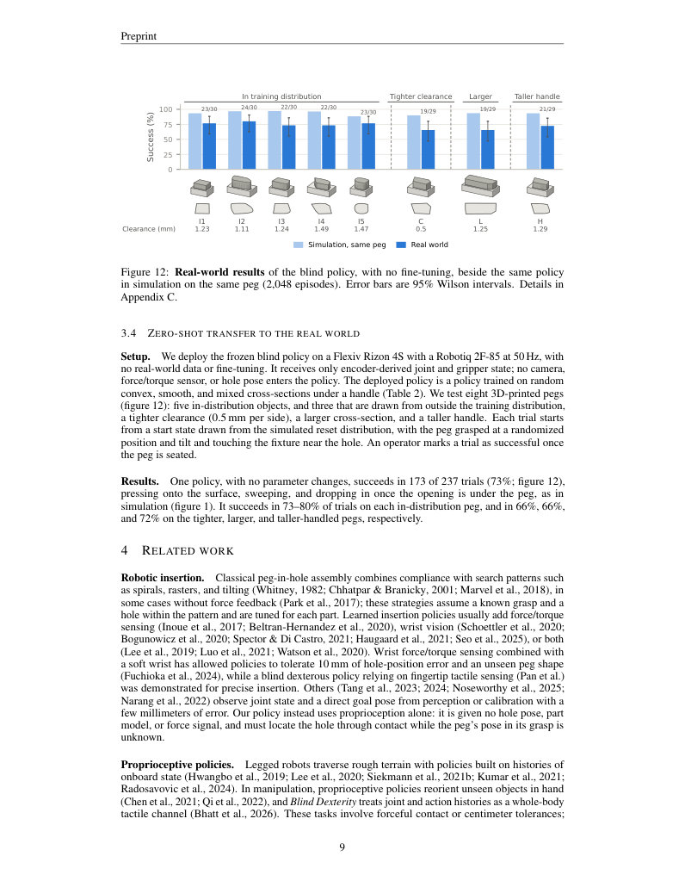
第 10 页Page 10PDF p.10
insertion needs neither. In imitation learning, robot state can hurt (Team et al., 2024) by suppressing visual learning (Lu et al., 2026).
而插入任务两者皆不需要。在模仿学习中，机器人状态可能会通过抑制视觉学习而造成损害（Team et al., 2024; Lu et al., 2026）。
Simulating tight contact. Approximate convex decomposition (Mamou & Ghorbel, 2009; Wei et al., 2022) tolerates concavity relative to the mesh size, which can exceed an assembly’s clearance. Exact polygon partitions are classical (Keil, 1985), and simulation benchmarks build holes from primitives by hand (Zhu et al., 2020; Tao et al., 2024; Zakka et al., 2025); mjfit automates this for arbitrary outlines and generates assemblies in bulk. SDFs handle concavity directly and underlie GPU assembly simulation in Factory and its successors (Narang et al., 2022; Macklin et al., 2020; Tang et al., 2023), whose assets obtain their clearance approximately, by displacing mesh vertices or eroding voxels (Tang et al., 2024; Wang et al., 2025); SDF accuracy depends on field resolution and contact search. Newton combines SDFs with hydroelastic contact (The Newton developers, 2025), and barrier methods simulate threads and gear trains without interpenetration (Ferguson et al., 2021; Lan et al., 2022). Our benchmark (section 2.2) follows the simulator comparisons of Erez et al. (2015) and Le Lidec et al. (2024). CRISP (Lee et al., 2026) recently compared engines on tight insertion and threading; we instead keep MuJoCo’s solver fixed and vary only the collision geometry, using passive probes with analytic answers and speed–accuracy Pareto fronts.
紧密接触仿真。近似凸分解（Mamou & Ghorbel, 2009; Wei et al., 2022）所容忍的凹度与网格尺寸相关，而这一凹度可能会超出装配的配合间隙。精确多边形分割是一项经典技术（Keil, 1985），而仿真基准通常手动利用图元来构建孔洞（Zhu et al., 2020; Tao et al., 2024; Zakka et al., 2025）；mjfit 则针对任意轮廓实现了此过程的自动化，并能批量生成装配体。SDF 能直接处理凹面，是 Factory 及其后续工作中 GPU 装配仿真的基础（Narang et al., 2022; Macklin et al., 2020; Tang et al., 2023），这些工作中的资产通过移动网格顶点或腐蚀体素来近似获得装配间隙（Tang et al., 2024; Wang et al., 2025）；SDF 的精度取决于场分辨率和接触搜索。Newton 将 SDF 与水弹性接触相结合（The Newton developers, 2025），而障碍法能够在无实体穿透的情况下对螺纹和齿轮系进行仿真（Ferguson et al., 2021; Lan et al., 2022）。我们的基准（2.2 节）遵循了 Erez et al. (2015) 和 Le Lidec et al. (2024) 的仿真器比较方法。CRISP (Lee et al., 2026) 最近在紧密插入和螺纹旋接任务上对各引擎进行了对比；与之不同，我们保持 MuJoCo 的求解器固定，仅改变碰撞几何形状，并使用具有解析解的被动探针以及速度–精度帕累托前沿。
5 LIMITATIONS AND CONCLUSION
5 局限性与结论
We trained blind policies that insert pegs, mesh gears, and thread nuts from proprioception alone, with no fixture pose, grasp, or part model, on thousands of assemblies that mjfit generates with exact collision geometry. The peg insertion policy transfers zero-shot to the real world, and in simulation, blind policies generalize to unseen parts far better than matched visual policies. The peg insertion policy is, however, a last-mile manipulation skill, and its limits are those of one. First, it assumes it starts in contact: every training episode begins with the peg already touching the fixture a few centimeters from the hole, so another motion, scripted or visual, must bring it there. Second, its behavior is local. It searches the surface around where it starts and corrects the misalignments it met in training, but it cannot handle events that call for more than a local correction, such as a peg that slides out from the grasp and lands far from the hole.
我们在由 mjfit 生成并具有精确碰撞几何形状的数千种装配体上，仅凭本体感觉训练了能够完成销钉插入、齿轮啮合和螺母旋接的盲策略，整个过程无需工装夹具位姿、抓取位姿或零件模型。销钉插入策略能够零样本迁移至真实世界，并且在仿真中，盲策略对未见零件的泛化能力显著优于对应的视觉策略。然而，销钉插入策略属于“最后一公里”的操作技能，其局限性也正是此类技能所固有的。首先，它假定初始时即已发生接触：每个训练回合开始时，销钉都已接触到距离孔数厘米处的夹具，因此必须通过另一套脚本化或视觉动作将其引导至该位置。其次，它的行为是局部的。它会在起始位置附近的表面进行搜索，并纠正在训练中遇到过的偏差，但无法处理需要超出局部纠正范围的意外事件，例如销钉从夹持中滑脱并掉落到远离孔洞的位置。
ACKNOWLEDGMENTS
致谢
This research was financially supported by the Ministry of Trade, Industry, and Energy (MOTIE), Korea, under the “Global Industrial Technology Cooperation Center program” supervised by the Korea Institute for Advancement of Technology (KIAT). (Grant No. P0028435)
本研究得到了由韩国产业技术振兴院（KIAT）主管的韩国产业通商资源部（MOTIE）“全球产业技术合作中心计划”的资助。（项目编号：P0028435）
REFERENCES
REFERENCES
- Cristian C Beltran-Hernandez, Damien Petit, Ixchel G Ramirez-Alpizar, and Kensuke Harada. Variable compliance control for robotic peg-in-hole assembly: A deep-reinforcement-learning approach. Applied Sciences , 10(19):6923, 2020.
- Cristian C Beltran-Hernandez, Damien Petit, Ixchel G Ramirez-Alpizar, and Kensuke Harada. Variable compliance control for robotic peg-in-hole assembly: A deep-reinforcement-learning approach. Applied Sciences , 10(19):6923, 2020.
- Aditya Bhatt, Oleg Kaidanov, Puze Liu, and Jan Peters. Blind dexterity: Whole-body humanoid manipulation via pure proprioception, 2026.
- Aditya Bhatt, Oleg Kaidanov, Puze Liu, and Jan Peters. Blind dexterity: Whole-body humanoid manipulation via pure proprioception, 2026.
- Damian Bogunowicz, Aleksandr Rybnikov, Komal Vendidandi, and Fedor Chervinskii. Sim2real for peg-hole insertion with eye-in-hand camera, 2020. URL https://arxiv.org/abs/2005. 14401.
- Damian Bogunowicz, Aleksandr Rybnikov, Komal Vendidandi, and Fedor Chervinskii. Sim2real for peg-hole insertion with eye-in-hand camera, 2020. URL https://arxiv.org/abs/2005. 14401.
- Tao Chen, Jie Xu, and Pulkit Agrawal. A system for general in-hand object re-orientation. In Conference on Robot Learning , 2021.
- Tao Chen, Jie Xu, and Pulkit Agrawal. A system for general in-hand object re-orientation. In Conference on Robot Learning , 2021.
- Xuxin Cheng, Yandong Ji, Junming Chen, Ruihan Yang, Ge Yang, and Xiaolong Wang. Expressive whole-body control for humanoid robots. 2024.
- Xuxin Cheng, Yandong Ji, Junming Chen, Ruihan Yang, Ge Yang, and Xiaolong Wang. Expressive whole-body control for humanoid robots. 2024.
- Siddharth R Chhatpar and Michael S Branicky. Search strategies for peg-in-hole assemblies with position uncertainty. In IEEE/RSJ International Conference on Intelligent Robots and Systems , volume 3, pp. 1465–1470. IEEE, 2001.
- Siddharth R Chhatpar and Michael S Branicky. Search strategies for peg-in-hole assemblies with position uncertainty. In IEEE/RSJ International Conference on Intelligent Robots and Systems , volume 3, pp. 1465–1470. IEEE, 2001.
展开第 10 页原版整页（含全部图表、公式与页眉页脚）
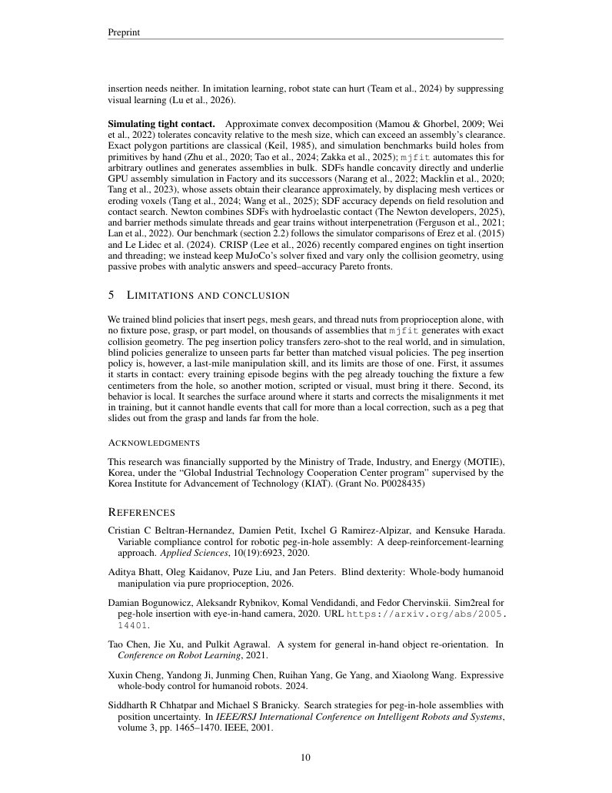
第 11 页Page 11PDF p.11
- Tom Erez, Yuval Tassa, and Emanuel Todorov. Simulation tools for model-based robotics: Comparison of Bullet, Havok, MuJoCo, ODE and PhysX. In IEEE International Conference on Robotics and Automation , pp. 4397–4404, 2015. doi: 10.1109/ICRA.2015.7139807.
- Tom Erez, Yuval Tassa, and Emanuel Todorov. Simulation tools for model-based robotics: Comparison of Bullet, Havok, MuJoCo, ODE and PhysX. In IEEE International Conference on Robotics and Automation , pp. 4397–4404, 2015. doi: 10.1109/ICRA.2015.7139807.
- Zachary Ferguson, Minchen Li, Teseo Schneider, Francisca Gil-Ureta, Timothy Langlois, Chenfanfu Jiang, Denis Zorin, Danny M. Kaufman, and Daniele Panozzo. Intersection-free rigid body dynamics. ACM Transactions on Graphics , 40(4), 2021. doi: 10.1145/3450626.3459802.
- Zachary Ferguson, Minchen Li, Teseo Schneider, Francisca Gil-Ureta, Timothy Langlois, Chenfanfu Jiang, Denis Zorin, Danny M. Kaufman, and Daniele Panozzo. Intersection-free rigid body dynamics. ACM Transactions on Graphics , 40(4), 2021. doi: 10.1145/3450626.3459802.
- Yuni Fuchioka, Cristian C. Beltran-Hernandez, Hai Nguyen, and Masashi Hamaya. Robotic object insertion with a soft wrist through sim-to-real privileged training. In IEEE/RSJ International Conference on Intelligent Robots and Systems , pp. 9159–9166, 2024. doi: 10.1109/IROS58592. 2024.10801575.
- Yuni Fuchioka, Cristian C. Beltran-Hernandez, Hai Nguyen, and Masashi Hamaya. Robotic object insertion with a soft wrist through sim-to-real privileged training. In IEEE/RSJ International Conference on Intelligent Robots and Systems , pp. 9159–9166, 2024. doi: 10.1109/IROS58592. 2024.10801575.
- Google DeepMind and NVIDIA. MuJoCo Warp: GPU-accelerated MuJoCo. https://github. com/google-deepmind/mujocowarp, 2025.
- Google DeepMind and NVIDIA. MuJoCo Warp: GPU-accelerated MuJoCo. https://github. com/google-deepmind/mujocowarp, 2025.
- Rasmus Haugaard, Jeppe Langaa, Christoffer Sloth, and Anders Buch. Fast robust peg-in-hole insertion with continuous visual servoing. In Conference on Robot Learning , pp. 1696–1705. PMLR, 2021.
- Rasmus Haugaard, Jeppe Langaa, Christoffer Sloth, and Anders Buch. Fast robust peg-in-hole insertion with continuous visual servoing. In Conference on Robot Learning , pp. 1696–1705. PMLR, 2021.
- Tairan He, Zhengyi Luo, Xialin He, Wenli Xiao, Chong Zhang, Weinan Zhang, Kris Kitani, Changliu Liu, and Guanya Shi. Omnih2o: Universal and dexterous human-to-humanoid whole-body teleoperation and learning. 2024.
- Tairan He, Zhengyi Luo, Xialin He, Wenli Xiao, Chong Zhang, Weinan Zhang, Kris Kitani, Changliu Liu, and Guanya Shi. Omnih2o: Universal and dexterous human-to-humanoid whole-body teleoperation and learning. 2024.
- Jemin Hwangbo, Joonho Lee, Alexey Dosovitskiy, Dario Bellicoso, Vassilios Tsounis, Vladlen Koltun, and Marco Hutter. Learning agile and dynamic motor skills for legged robots. Science robotics , 4(26):eaau5872, 2019.
- Jemin Hwangbo, Joonho Lee, Alexey Dosovitskiy, Dario Bellicoso, Vassilios Tsounis, Vladlen Koltun, and Marco Hutter. Learning agile and dynamic motor skills for legged robots. Science robotics , 4(26):eaau5872, 2019.
- Tadanobu Inoue, Giovanni De Magistris, Asim Munawar, Tsuyoshi Yokoya, and Ryuki Tachibana. Deep reinforcement learning for high precision assembly tasks. In IEEE/RSJ International Conference on Intelligent Robots and Systems , pp. 819–825, 2017. doi: 10.1109/IROS.2017. 8202244.
- Tadanobu Inoue, Giovanni De Magistris, Asim Munawar, Tsuyoshi Yokoya, and Ryuki Tachibana. Deep reinforcement learning for high precision assembly tasks. In IEEE/RSJ International Conference on Intelligent Robots and Systems , pp. 819–825, 2017. doi: 10.1109/IROS.2017. 8202244.
- Max Jaderberg, Volodymyr Mnih, Wojciech Marian Czarnecki, Tom Schaul, Joel Z. Leibo, David Silver, and Koray Kavukcuoglu. Reinforcement learning with unsupervised auxiliary tasks. In International Conference on Learning Representations , 2017.
- Max Jaderberg, Volodymyr Mnih, Wojciech Marian Czarnecki, Tom Schaul, Joel Z. Leibo, David Silver, and Koray Kavukcuoglu. Reinforcement learning with unsupervised auxiliary tasks. In International Conference on Learning Representations , 2017.
- J. Mark Keil. Decomposing a polygon into simpler components. SIAM Journal on Computing , 14(4): 799–817, 1985. doi: 10.1137/0214056.
- J. Mark Keil. Decomposing a polygon into simpler components. SIAM Journal on Computing , 14(4): 799–817, 1985. doi: 10.1137/0214056.
- Ashish Kumar, Zipeng Fu, Deepak Pathak, and Jitendra Malik. Rma: Rapid motor adaptation for legged robots. 2021.
- Ashish Kumar, Zipeng Fu, Deepak Pathak, and Jitendra Malik. Rma: Rapid motor adaptation for legged robots. 2021.
- Lei Lan, Danny M. Kaufman, Minchen Li, Chenfanfu Jiang, and Yin Yang. Affine body dynamics: Fast, stable and intersection-free simulation of stiff materials. ACM Transactions on Graphics , 41 (4), 2022. doi: 10.1145/3528223.3530064.
- Lei Lan, Danny M. Kaufman, Minchen Li, Chenfanfu Jiang, and Yin Yang. Affine body dynamics: Fast, stable and intersection-free simulation of stiff materials. ACM Transactions on Graphics , 41 (4), 2022. doi: 10.1145/3528223.3530064.
- Quentin Le Lidec, Wilson Jallet, Louis Montaut, Ivan Laptev, Cordelia Schmid, and Justin Carpentier. Contact models in robotics: a comparative analysis. IEEE Transactions on Robotics , 40:3716–3733, 2024.
- Quentin Le Lidec, Wilson Jallet, Louis Montaut, Ivan Laptev, Cordelia Schmid, and Justin Carpentier. Contact models in robotics: a comparative analysis. IEEE Transactions on Robotics , 40:3716–3733, 2024.
- Joonho Lee, Jemin Hwangbo, Lorenz Wellhausen, Vladlen Koltun, and Marco Hutter. Learning quadrupedal locomotion over challenging terrain. Science Robotics , 5(47):eabc5986, 2020. doi: 10.1126/scirobotics.abc5986.
- Joonho Lee, Jemin Hwangbo, Lorenz Wellhausen, Vladlen Koltun, and Marco Hutter. Learning quadrupedal locomotion over challenging terrain. Science Robotics , 5(47):eabc5986, 2020. doi: 10.1126/scirobotics.abc5986.
- Michelle A Lee, Yuke Zhu, Peter Zachares, Matthew Tan, Krishnan Srinivasan, Silvio Savarese, Li Fei-Fei, Animesh Garg, and Jeannette Bohg. Making sense of vision and touch: Learning multimodal representations for contact-rich tasks. arXiv preprint arXiv:1907.13098 , 2019.
- Michelle A Lee, Yuke Zhu, Peter Zachares, Matthew Tan, Krishnan Srinivasan, Silvio Savarese, Li Fei-Fei, Animesh Garg, and Jeannette Bohg. Making sense of vision and touch: Learning multimodal representations for contact-rich tasks. arXiv preprint arXiv:1907.13098 , 2019.
- Somang Lee, Sunkyung Park, Jinhee Yun, Seoki An, and Dongjun Lee. CRISP: Contact-rich robotic simulation platform with extensive geometries and contact solvers, 2026. URL https: //arxiv.org/abs/2609.21761.
- Somang Lee, Sunkyung Park, Jinhee Yun, Seoki An, and Dongjun Lee. CRISP: Contact-rich robotic simulation platform with extensive geometries and contact solvers, 2026. URL https: //arxiv.org/abs/2609.21761.
展开第 11 页原版整页（含全部图表、公式与页眉页脚）
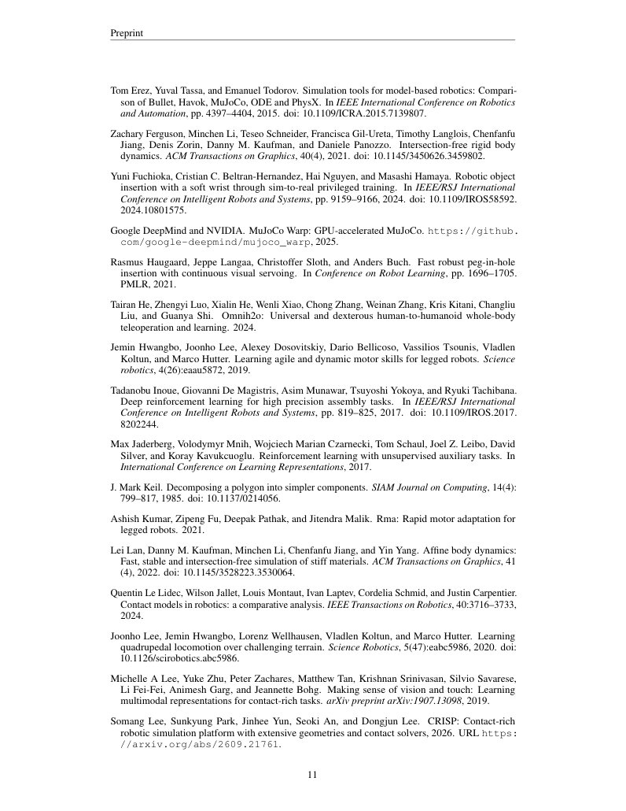
第 12 页Page 12PDF p.12
- Jingxian Lu, Wenke Xia, Yuxuan Wu, Zhiwu Lu, and Di Hu. When would vision-proprioception policies fail in robotic manipulation? 2026.
- Jingxian Lu, Wenke Xia, Yuxuan Wu, Zhiwu Lu, and Di Hu. When would vision-proprioception policies fail in robotic manipulation? 2026.
- Jianlan Luo, Oleg Sushkov, Rugile Pevceviciute, Wenzhao Lian, Chang Su, Mel Vecerik, Ning Ye, Stefan Schaal, and Jon Scholz. Robust multi-modal policies for industrial assembly via reinforcement learning and demonstrations: A large-scale study. In Robotics: Science and Systems , 2021.
- Jianlan Luo, Oleg Sushkov, Rugile Pevceviciute, Wenzhao Lian, Chang Su, Mel Vecerik, Ning Ye, Stefan Schaal, and Jon Scholz. Robust multi-modal policies for industrial assembly via reinforcement learning and demonstrations: A large-scale study. In Robotics: Science and Systems , 2021.
- Miles Macklin, Kenny Erleben, Matthias Muller, Nuttapong Chentanez, Stefan Jeschke, and Zach¨ Corse. Local optimization for robust signed distance field collision. In Proceedings of the ACM on Computer Graphics and Interactive Techniques , volume 3, 2020. doi: 10.1145/3384538.
- Miles Macklin, Kenny Erleben, Matthias Muller, Nuttapong Chentanez, Stefan Jeschke, and Zach¨ Corse. Local optimization for robust signed distance field collision. In Proceedings of the ACM on Computer Graphics and Interactive Techniques , volume 3, 2020. doi: 10.1145/3384538.
- Khaled Mamou and Faouzi Ghorbel. A simple and efficient approach for 3D mesh approximate convex decomposition. In IEEE International Conference on Image Processing , pp. 3501–3504, 2009. doi: 10.1109/ICIP.2009.5414068.
- Khaled Mamou and Faouzi Ghorbel. A simple and efficient approach for 3D mesh approximate convex decomposition. In IEEE International Conference on Image Processing , pp. 3501–3504, 2009. doi: 10.1109/ICIP.2009.5414068.
- Jeremy A Marvel, Roger Bostelman, and Joe Falco. Multi-robot assembly strategies and metrics. ACM Computing Surveys (CSUR) , 51(1):1–32, 2018.
- Jeremy A Marvel, Roger Bostelman, and Joe Falco. Multi-robot assembly strategies and metrics. ACM Computing Surveys (CSUR) , 51(1):1–32, 2018.
- Yashraj Narang, Kier Storey, Iretiayo Akinola, Miles Macklin, Philipp Reist, Lukasz Wawrzyniak, Yunrong Guo, Adam Moravanszky, Gavriel State, Michelle Lu, et al. Factory: Fast contact for robotic assembly. 2022.
- Yashraj Narang, Kier Storey, Iretiayo Akinola, Miles Macklin, Philipp Reist, Lukasz Wawrzyniak, Yunrong Guo, Adam Moravanszky, Gavriel State, Michelle Lu, et al. Factory: Fast contact for robotic assembly. 2022.
- Michael Noseworthy, Bingjie Tang, Bowen Wen, Ankur Handa, Chad Kessens, Nicholas Roy, Dieter Fox, Fabio Ramos, Yashraj Narang, and Iretiayo Akinola. Forge: Force-guided exploration for robust contact-rich manipulation under uncertainty, 2025.
- Michael Noseworthy, Bingjie Tang, Bowen Wen, Ankur Handa, Chad Kessens, Nicholas Roy, Dieter Fox, Fabio Ramos, Yashraj Narang, and Iretiayo Akinola. Forge: Force-guided exploration for robust contact-rich manipulation under uncertainty, 2025.
- Jiahe Pan, Stelian Coros, Jitendra Malik, and Toru Lin. Beyond binary: Sim-to-real dexterous manipulation with physics-aware contact representation.
- Jiahe Pan, Stelian Coros, Jitendra Malik, and Toru Lin. Beyond binary: Sim-to-real dexterous manipulation with physics-aware contact representation.
- Hyeonjun Park, Jaeheung Park, Dong-Hyuk Lee, Jae-Han Park, Moon-Hong Baeg, and Ji-Hun Bae. Compliance-based robotic peg-in-hole assembly strategy without force feedback. IEEE Transactions on Industrial Electronics , 64(8):6299–6309, 2017. doi: 10.1109/TIE.2017.2682002.
- Hyeonjun Park, Jaeheung Park, Dong-Hyuk Lee, Jae-Han Park, Moon-Hong Baeg, and Ji-Hun Bae. Compliance-based robotic peg-in-hole assembly strategy without force feedback. IEEE Transactions on Industrial Electronics , 64(8):6299–6309, 2017. doi: 10.1109/TIE.2017.2682002.
- Xue Bin Peng, Marcin Andrychowicz, Wojciech Zaremba, and Pieter Abbeel. Sim-to-real transfer of robotic control with dynamics randomization. In IEEE International Conference on Robotics and Automation , 2018.
- Xue Bin Peng, Marcin Andrychowicz, Wojciech Zaremba, and Pieter Abbeel. Sim-to-real transfer of robotic control with dynamics randomization. In IEEE International Conference on Robotics and Automation , 2018.
- Lerrel Pinto, Marcin Andrychowicz, Peter Welinder, Wojciech Zaremba, and Pieter Abbeel. Asymmetric actor critic for image-based robot learning. In Robotics: Science and Systems , 2018.
- Lerrel Pinto, Marcin Andrychowicz, Peter Welinder, Wojciech Zaremba, and Pieter Abbeel. Asymmetric actor critic for image-based robot learning. In Robotics: Science and Systems , 2018.
- Haozhi Qi, Ashish Kumar, Roberto Calandra, Yi Ma, and Jitendra Malik. In-hand object rotation via rapid motor adaptation. In Conference on Robot Learning , 2022.
- Haozhi Qi, Ashish Kumar, Roberto Calandra, Yi Ma, and Jitendra Malik. In-hand object rotation via rapid motor adaptation. In Conference on Robot Learning , 2022.
- Ilija Radosavovic, Tete Xiao, Bike Zhang, Trevor Darrell, Jitendra Malik, and Koushil Sreenath. Real-world humanoid locomotion with reinforcement learning. Science Robotics , 9(89):eadi9579, 2024.
- Ilija Radosavovic, Tete Xiao, Bike Zhang, Trevor Darrell, Jitendra Malik, and Koushil Sreenath. Real-world humanoid locomotion with reinforcement learning. Science Robotics , 9(89):eadi9579, 2024.
- Gerrit Schoettler, Ashvin Nair, Jianlan Luo, Shikhar Bahl, Juan Aparicio Ojea, Eugen Solowjow, and Sergey Levine. Deep reinforcement learning for industrial insertion tasks with visual inputs and natural rewards. In IEEE/RSJ International Conference on Intelligent Robots and Systems , 2020.
- Gerrit Schoettler, Ashvin Nair, Jianlan Luo, Shikhar Bahl, Juan Aparicio Ojea, Eugen Solowjow, and Sergey Levine. Deep reinforcement learning for industrial insertion tasks with visual inputs and natural rewards. In IEEE/RSJ International Conference on Intelligent Robots and Systems , 2020.
- John Schulman, Filip Wolski, Prafulla Dhariwal, Alec Radford, and Oleg Klimov. Proximal policy optimization algorithms. arXiv preprint arXiv:1707.06347 , 2017.
- John Schulman, Filip Wolski, Prafulla Dhariwal, Alec Radford, and Oleg Klimov. Proximal policy optimization algorithms. arXiv preprint arXiv:1707.06347 , 2017.
- Joohwan Seo, Arvind Kruthiventy, Soomi Lee, Megan Teng, Seoyeon Choi, Xiang Zhang, Jongeun Choi, and Roberto Horowitz. Equicontact: A hierarchical se (3) vision-to-force equivariant policy for spatially generalizable contact-rich tasks, 2025.
- Joohwan Seo, Arvind Kruthiventy, Soomi Lee, Megan Teng, Seoyeon Choi, Xiang Zhang, Jongeun Choi, and Roberto Horowitz. Equicontact: A hierarchical se (3) vision-to-force equivariant policy for spatially generalizable contact-rich tasks, 2025.
- Jonah Siekmann, Yesh Godse, Alan Fern, and Jonathan Hurst. Sim-to-real learning of all common bipedal gaits via periodic reward composition. In 2021 IEEE international conference on robotics and automation (ICRA) , pp. 7309–7315. IEEE, 2021a.
- Jonah Siekmann, Yesh Godse, Alan Fern, and Jonathan Hurst. Sim-to-real learning of all common bipedal gaits via periodic reward composition. In 2021 IEEE international conference on robotics and automation (ICRA) , pp. 7309–7315. IEEE, 2021a.
展开第 12 页原版整页（含全部图表、公式与页眉页脚）
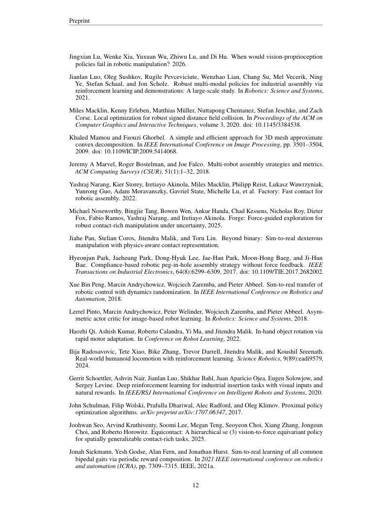
第 13 页Page 13PDF p.13
- Jonah Siekmann, Kevin Green, John Warila, Alan Fern, and Jonathan Hurst. Blind bipedal stair traversal via sim-to-real reinforcement learning. 2021b.
- Jonah Siekmann, Kevin Green, John Warila, Alan Fern, and Jonathan Hurst. Blind bipedal stair traversal via sim-to-real reinforcement learning. 2021b.
- Oren Spector and Dotan Di Castro. InsertionNet: A scalable solution for insertion. IEEE Robotics and Automation Letters , 6(3):5509–5516, 2021.
- Oren Spector and Dotan Di Castro. InsertionNet: A scalable solution for insertion. IEEE Robotics and Automation Letters , 6(3):5509–5516, 2021.
- Bingjie Tang, Michael A Lin, Iretiayo Akinola, Ankur Handa, Gaurav S Sukhatme, Fabio Ramos, Dieter Fox, and Yashraj Narang. Industreal: Transferring contact-rich assembly tasks from simulation to reality. 2023.
- Bingjie Tang, Michael A Lin, Iretiayo Akinola, Ankur Handa, Gaurav S Sukhatme, Fabio Ramos, Dieter Fox, and Yashraj Narang. Industreal: Transferring contact-rich assembly tasks from simulation to reality. 2023.
- Bingjie Tang, Iretiayo Akinola, Jie Xu, Bowen Wen, Ankur Handa, Karl Van Wyk, Dieter Fox, Gaurav S. Sukhatme, Fabio Ramos, and Yashraj Narang. AutoMate: Specialist and generalist assembly policies over diverse geometries. In Robotics: Science and Systems , 2024.
- Bingjie Tang, Iretiayo Akinola, Jie Xu, Bowen Wen, Ankur Handa, Karl Van Wyk, Dieter Fox, Gaurav S. Sukhatme, Fabio Ramos, and Yashraj Narang. AutoMate: Specialist and generalist assembly policies over diverse geometries. In Robotics: Science and Systems , 2024.
- Stone Tao, Fanbo Xiang, Arth Shukla, Yuzhe Qin, Xander Hinrichsen, Xiaodi Yuan, Chen Bao, Xinsong Lin, Yulin Liu, Tse-kai Chan, Yuan Gao, Xuanlin Li, Tongzhou Mu, Nan Xiao, Arnav Gurha, Viswesh Nagaswamy Rajesh, Yong Woo Choi, Yen-Ru Chen, Zhiao Huang, Roberto Calandra, Rui Chen, Shan Luo, and Hao Su. ManiSkill3: GPU parallelized robotics simulation and rendering for generalizable embodied AI, 2024. URL https://arxiv.org/abs/2410. 00425.
- Stone Tao, Fanbo Xiang, Arth Shukla, Yuzhe Qin, Xander Hinrichsen, Xiaodi Yuan, Chen Bao, Xinsong Lin, Yulin Liu, Tse-kai Chan, Yuan Gao, Xuanlin Li, Tongzhou Mu, Nan Xiao, Arnav Gurha, Viswesh Nagaswamy Rajesh, Yong Woo Choi, Yen-Ru Chen, Zhiao Huang, Roberto Calandra, Rui Chen, Shan Luo, and Hao Su. ManiSkill3: GPU parallelized robotics simulation and rendering for generalizable embodied AI, 2024. URL https://arxiv.org/abs/2410. 00425.
- Octo Model Team, Dibya Ghosh, Homer Walke, Karl Pertsch, Kevin Black, Oier Mees, Sudeep Dasari, Joey Hejna, Tobias Kreiman, Charles Xu, et al. Octo: An open-source generalist robot policy. 2024.
- Octo Model Team, Dibya Ghosh, Homer Walke, Karl Pertsch, Kevin Black, Oier Mees, Sudeep Dasari, Joey Hejna, Tobias Kreiman, Charles Xu, et al. Octo: An open-source generalist robot policy. 2024.
- The Newton developers. Newton: GPU-accelerated physics simulation for robotics. https: //github.com/newton-physics/newton, 2025.
- The Newton developers. Newton: GPU-accelerated physics simulation for robotics. https: //github.com/newton-physics/newton, 2025.
- Josh Tobin, Rachel Fong, Alex Ray, Jonas Schneider, Wojciech Zaremba, and Pieter Abbeel. Domain randomization for transferring deep neural networks from simulation to the real world. In IEEE/RSJ International Conference on Intelligent Robots and Systems , 2017.
- Josh Tobin, Rachel Fong, Alex Ray, Jonas Schneider, Wojciech Zaremba, and Pieter Abbeel. Domain randomization for transferring deep neural networks from simulation to the real world. In IEEE/RSJ International Conference on Intelligent Robots and Systems , 2017.
- Emanuel Todorov, Tom Erez, and Yuval Tassa. Mujoco: A physics engine for model-based control. In 2012 IEEE/RSJ international conference on intelligent robots and systems , pp. 5026–5033. IEEE, 2012.
- Emanuel Todorov, Tom Erez, and Yuval Tassa. Mujoco: A physics engine for model-based control. In 2012 IEEE/RSJ international conference on intelligent robots and systems , pp. 5026–5033. IEEE, 2012.
- Yian Wang, Bingjie Tang, Chuang Gan, Dieter Fox, Kaichun Mo, Yashraj Narang, and Iretiayo Akinola. MatchMaker: Automated asset generation for robotic assembly. In IEEE International Conference on Robotics and Automation , 2025.
- Yian Wang, Bingjie Tang, Chuang Gan, Dieter Fox, Kaichun Mo, Yashraj Narang, and Iretiayo Akinola. MatchMaker: Automated asset generation for robotic assembly. In IEEE International Conference on Robotics and Automation , 2025.
- James Watson, Austin Miller, and Nikolaus Correll. Autonomous industrial assembly using force, torque, and rgb-d sensing. Advanced Robotics , 34(7-8):546–559, 2020.
- James Watson, Austin Miller, and Nikolaus Correll. Autonomous industrial assembly using force, torque, and rgb-d sensing. Advanced Robotics , 34(7-8):546–559, 2020.
- Xinyue Wei, Minghua Liu, Zhan Ling, and Hao Su. Approximate convex decomposition for 3D meshes with collision-aware concavity and tree search. ACM Transactions on Graphics , 41(4), 2022. doi: 10.1145/3528223.3530103.
- Xinyue Wei, Minghua Liu, Zhan Ling, and Hao Su. Approximate convex decomposition for 3D meshes with collision-aware concavity and tree search. ACM Transactions on Graphics , 41(4), 2022. doi: 10.1145/3528223.3530103.
- Daniel E Whitney. Quasi-static assembly of compliantly supported rigid parts. 1982.
- Daniel E Whitney. Quasi-static assembly of compliantly supported rigid parts. 1982.
- Kevin Zakka, Baruch Tabanpour, Qiayuan Liao, Mustafa Haiderbhai, Samuel Holt, Jing Yuan Luo, Arthur Allshire, Erik Frey, Koushil Sreenath, Lueder A Kahrs, et al. Mujoco playground, 2025.
- Kevin Zakka, Baruch Tabanpour, Qiayuan Liao, Mustafa Haiderbhai, Samuel Holt, Jing Yuan Luo, Arthur Allshire, Erik Frey, Koushil Sreenath, Lueder A Kahrs, et al. Mujoco playground, 2025.
- Kevin Zakka, Qiayuan Liao, Brent Yi, Louis Le Lay, Koushil Sreenath, and Pieter Abbeel. mjlab: A lightweight framework for gpu-accelerated robot learning, 2026.
- Kevin Zakka, Qiayuan Liao, Brent Yi, Louis Le Lay, Koushil Sreenath, and Pieter Abbeel. mjlab: A lightweight framework for gpu-accelerated robot learning, 2026.
- Yuke Zhu, Josiah Wong, Ajay Mandlekar, Roberto Mart´ın-Mart´ın, Abhishek Joshi, Kevin Lin, Abhiram Maddukuri, Soroush Nasiriany, and Yifeng Zhu. robosuite: A modular simulation framework and benchmark for robot learning, 2020. URL https://arxiv.org/abs/2009. 12293.
- Yuke Zhu, Josiah Wong, Ajay Mandlekar, Roberto Mart´ın-Mart´ın, Abhishek Joshi, Kevin Lin, Abhiram Maddukuri, Soroush Nasiriany, and Yifeng Zhu. robosuite: A modular simulation framework and benchmark for robot learning, 2020. URL https://arxiv.org/abs/2009. 12293.
展开第 13 页原版整页（含全部图表、公式与页眉页脚）
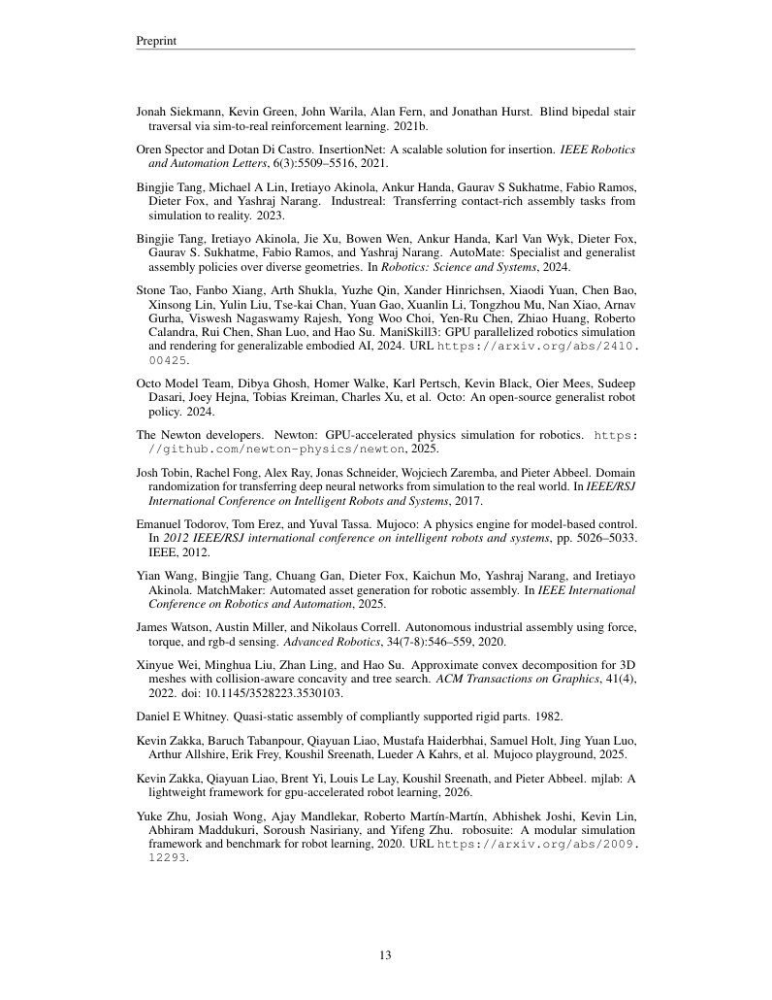
第 14 页Page 14PDF p.14
A TRAINING DETAILS
A 训练细节
Study and deployed policies. To cover as much real-world variation as possible, the deployed peg policy (section 3.4) is trained on the full ranges of part geometry, physics parameters, and object pose that we can (limited by physics stability, geometric constraints like the gripper width, etc.). We also train similarly diverse gear and nut policies for the latent probe (section 3.2; Appendix A.2). In order to test the policies’ capacity for generalizing out of the training distribution, we design study training ranges for all three tasks (section 3) that are more narrow (Table 1), so that we can systematically widen each property beyond training (section 3.3).
研究策略与部署策略。为了尽可能覆盖现实世界的各种变化，所部署的销钉策略（3.4 节）在我们所能实现的全部零件几何形状、物理参数和物体位姿范围内进行训练（受限于物理稳定性、夹爪宽度等几何约束）。我们还针对潜在探针训练了同样具有多样性的齿轮与螺母策略（3.2 节；附录 A.2）。为了测试这些策略拓展到训练分布之外的泛化能力，我们为所有三个任务（第 3 节）设计了更窄的研究训练范围（表 1），以便系统地将各项属性拓宽到训练范围之外（3.3 节）。
A.1 STUDY POLICIES
A.1 研究策略
Tasks. Physics runs at 1 kHz under a 50 Hz policy, and each world holds one part and fixture drawn from mjfit’s generators. Peg insertion: each episode starts with the peg touching the fixture’s top face, a median 1 cm from the hole center. It succeeds when the entire peg bottom face is seated in the hole. Bonuses of \(+1\) reward the peg’s first capture by the opening and success. Contact labels mark each of 64 points on the peg’s bottom edge as free (more than 1 mm above the fixture’s top face), in contact (on the rim or top face, within 1 mm), or inside the opening. An episode lasts at most 5 s. Gear meshing: each world holds a spur-gear set from mjfit’s gear generator, and the robot holds the gear by a printed boss. Each episode starts with the gear resting on the shaft tip, off the shaft axis, with its teeth out of phase with the anchors’. It succeeds when the bore surrounds the shaft and the gear sits within 1 mm of the shaft’s collar, which the anchors’ teeth allow only in mesh. Bonuses reward the first capture of the shaft, the first mesh with every anchor, and success; contact labels mark 64 points on the shaft’s rim (free, on the gear, or inside the bore) and 64 on the gear’s tooth tips (free, on an anchor, or in mesh); an episode lasts at most 10 s. Nut threading: each world holds an ISO metric nut and bolt pair from mjfit’s thread generator. Each episode starts with the nut resting on the bolt tip, tilted and off the bolt axis, short of the turn at which the thread catches it. It succeeds a quarter turn after the thread catches, with the nut within 1 mm of the bolt axis; bonuses reward seating, capture, each new extent of the turn, and success; contact labels mark 64 points on the rim of the nut’s bore (free, on the bolt’s tip, around the bolt, or caught by the thread, within a band of 0.29 pitch, 1 mm at M30\(\times\)3.5); an episode lasts at most 15 s. Every episode also ends when the part moves far from the fixture, and a nut episode when the nut leaves the grasp.
任务。物理仿真以 1 kHz 的频率在 50 Hz 的策略控制下运行，每个仿真世界包含一个从 mjfit 生成器中采样的零件和夹具。销钉插入：每个 episode 开始时销钉接触夹具顶面，距离孔中心的中位数为 1 cm。当整个销钉底面完全就位于孔内时判定为成功。开孔首次捕获销钉以及任务成功均奖励 \(+1\) 的加分（bonus）。接触标签将销钉底边缘上的 64 个点分别标记为空闲（高于夹具顶面 1 mm 以上）、接触（位于孔边缘或顶面上，在 1 mm 以内）或在开孔内部。一个 episode 最长持续 5 s。齿轮啮合：每个仿真世界包含一套来自 mjfit 齿轮生成器的正齿轮组，机器人通过打印的轮毂凸台夹持齿轮。每个 episode 开始时齿轮搭在轴尖端，偏离轴线，其轮齿与固定齿轮的轮齿错相。当内孔套住轴且齿轮位于距离轴台阶 1 mm 以内时判定为成功，而只有在啮合状态下固定齿轮的轮齿才允许达到该位置。首次捕获轴、与每个固定齿轮首次啮合以及成功都会获得奖励加分；接触标签将轴边缘上的 64 个点标记为（空闲、位于齿轮上或在内孔内），将齿轮齿尖上的 64 个点标记为（空闲、位于固定齿轮上或处于啮合状态）；一个 episode 最长持续 10 s。螺母拧入：每个仿真世界包含一套来自 mjfit 螺纹生成器的 ISO 公制螺母与螺栓对。每个 episode 开始时螺母搭在螺栓尖端，处于倾斜且偏离螺栓轴线的状态，尚未达到螺纹咬合的转角。在螺纹咬合后再旋转四分之一圈、且螺母距离螺栓轴线在 1 mm 以内时判定为成功；就位、捕获、旋转达到的每个新角度范围以及成功都会获得奖励加分；接触标签将螺母内孔边缘的 64 个点标记为（空闲、在螺栓尖端上、环绕螺栓、或被螺纹咬合，判定范围在 0.29 个螺距以内，对于 M30\(\times\)3.5 相当于 1 mm）；一个 episode 最长持续 15 s。当零件远离夹具时，每个 episode 也会终止；对于螺母任务，当螺母脱离抓取时 episode 亦会终止。
Architecture. The actor observes 33 values per step: seven joint positions, seven joint velocities, the gripper pose and twist (twelve), and its previous action (seven). The nut policy’s actor encodes the gripper orientation by two columns of its rotation matrix rather than by Euler angles (36 values), since the wrist turns through half a revolution while threading. A temporal convolutional encoder maps the last 30 observations (0.6 s) to a 32-dimensional latent; an MLP (256, 256, 128 units) maps the latent and the current observation to seven joint-position increments, scaled by the action scale of Table 1 and added to the measured joint positions. The critic sees the part’s pose relative to the fixture, the contact labels, and, for the nut, the thread’s geometry (240, 434, and 317 inputs for the peg, gear, and nut).
网络架构。Actor 每步观测 33 个数值：7 个关节位置、7 个关节速度、夹爪位姿与旋量（12 个数值），以及上一时刻的动作（7 个数值）。螺母策略的 actor 采用旋转矩阵的两列而非欧拉角对夹爪朝向进行编码（共 36 个数值），因为在拧螺纹时手腕会旋转半周。一个时间卷积编码器将最近 30 步的观测（0.6 s）映射到一个 32 维的潜在向量；一个 MLP（包含 256、256、128 个单元）将潜在向量和当前观测映射为 7 个关节位置增量，按表 1 中的动作尺度缩放后累加到测得的关节位置上。Critic 观测零件相对于夹具的位姿、接触标签，并且对于螺母任务还包含螺纹的几何形状（对于销钉、齿轮和螺母任务，输入维度分别为 240、434 和 317）。
PPO. 12,288 worlds, 32-step rollouts, 5 epochs of 20 minibatches (24 for the gear and nut), fixed learning rate \(3\times10^{-4}\), clip 0.2, \(\gamma=0.98\), \(\lambda=0.95\), entropy coefficient 0.003, value-loss coefficient 1 with clipping, gradient norm clipped at 1, and initial action standard deviation 0.5. The contact decoder has two hidden layers of 128 units and class weights 0.25 (free), 3.0 (contact), and 2.0 (inside, in mesh, around the bolt, or caught). The visual policies see 64\(\times\)64 wrist RGB images over the same 30 steps.
PPO。12,288 个仿真世界，32 步 rollout，5 个 epoch，每个 epoch 20 个小批次（齿轮和螺母任务为 24 个），固定学习率 \(3\times10^{-4}\)，裁剪阈值 0.2，\(\gamma=0.98\)，\(\lambda=0.95\)，熵系数 0.003，带裁剪的价值损失系数 1，梯度范数裁剪为 1，初始动作标准差 0.5。接触解码器包含两个 128 单元的隐藏层，类别权重分别为 0.25（空闲）、3.0（接触）以及 2.0（在内部、处于啮合、环绕螺栓或被咬合）。视觉策略在相同的 30 步内观测 64\(\times\)64 的手腕 RGB 图像。
A.2 DEPLOYED AND FULL-RANGE POLICIES
A.2 部署策略与全范围策略
Deployed peg policy. The policy we deploy (section 3.4) trains as the study peg policies do, on the ranges of Table 2: random convex cross-sections under a handle, and wider contact and pose ranges. Its starts lie a median 2 cm from the hole center. It uses the gear’s and nut’s controller and a staged safety penalty, which starts once the task has been learned without safety limits and penalizes joint speeds and commanded torques above one sixth of the hardware limits. PPO uses 24 minibatches and an exploration anneal, during which the learning rate adapts to a target KL of 0.01.
部署的销钉策略。我们所部署的策略（3.4 节）与研究销钉策略采用相同的训练方式，但在表 2 的范围内进行训练：把手下方的随机凸截面，以及更宽的接触和位姿范围。其起始位置距离孔中心的中位数为 2 cm。它采用了与齿轮和螺母相同的控制器以及分阶段的安全惩罚：在未设安全限制学会该任务后启用该惩罚，对超过硬件限制六分之一的关节速度和指令力矩进行惩罚。PPO 采用 24 个小批次并进行探索退火，在此期间学习率自适应调整以达到 0.01 的目标 KL 散度。
展开第 14 页原版整页（含全部图表、公式与页眉页脚）
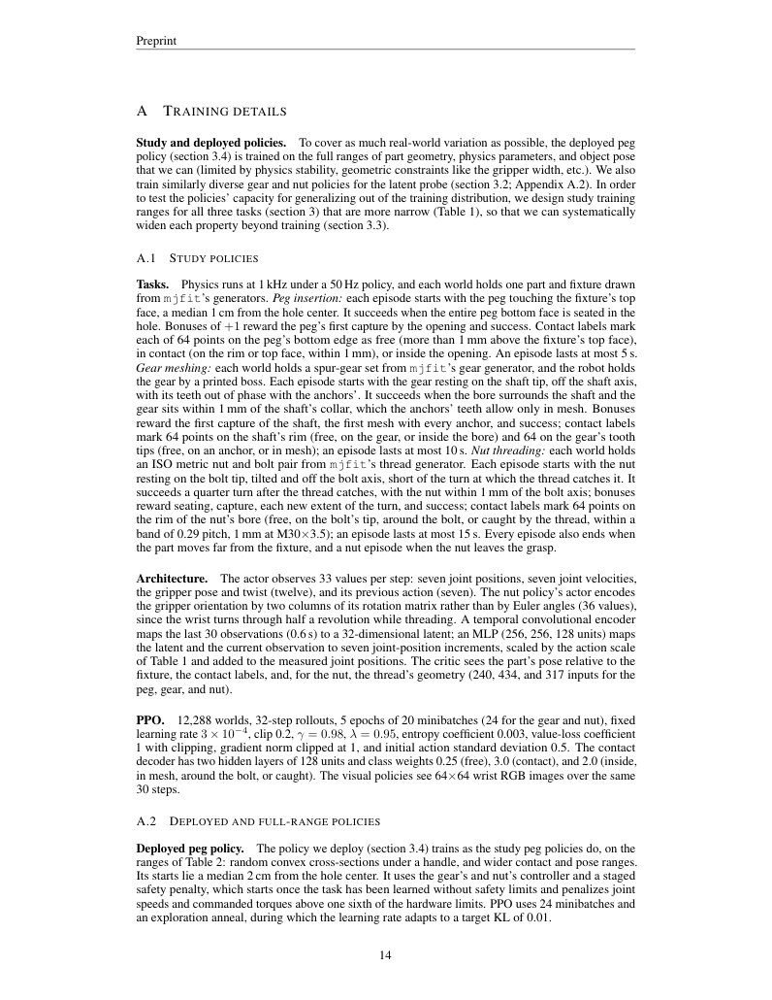
第 15 页Page 15PDF p.15
Table 1: Study training ranges. The study policies of all three tasks (section 3) train on these ranges; Appendix A.2 gives the wider ranges of the deployed peg policy and the full-range gear and nut policies. Ranges marked (log) are sampled log-uniformly and the rest uniformly. Geometry is drawn once per world; poses and contact parameters at every reset. No observation noise is added. \(^\ddagger\) The peg’s hole center; the gear’s and bolt’s fixtures draw the same offsets from their own nominal positions.
表 1：研究训练范围。所有三个任务的研究策略（第 3 节）均在这些范围内进行训练；附录 A.2 给出了部署的销钉策略以及全范围齿轮和螺母策略的更宽范围。标记为 (log) 的范围按对数均匀分布采样，其余按均匀分布采样。几何形状在每个仿真世界中采样一次；位姿和接触参数在每次重置时采样。未添加观测噪声。\(^\ddagger\) 销钉孔中心；齿轮和螺栓的夹具则从各自的标称位置采样相同的偏移量。
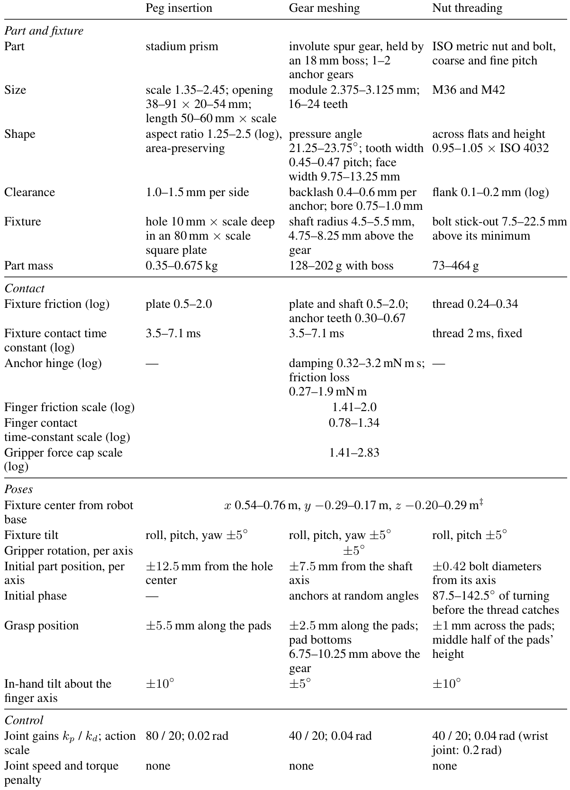
展开第 15 页原版整页（含全部图表、公式与页眉页脚）
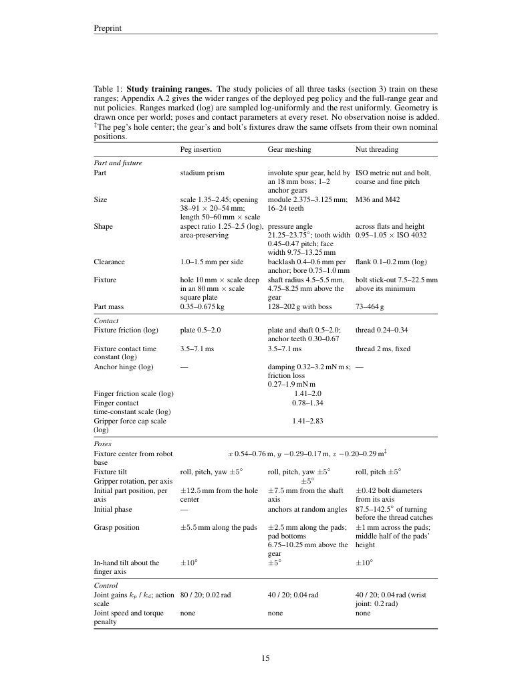
第 16 页Page 16PDF p.16
Table 2: Deployed peg policy’s training ranges , where they differ from the study peg’s (Table 1); scale, aspect ratio, and clearance are the study’s.\(^\dagger\) Polygonal, smooth, and mixed outlines in equal shares, each inside a stadium of the given scale and aspect ratio and redrawn until its hole fits the printed fixture insert (at most 106\(\times\)52 mm), under an 80\(\times\)44\(\times\)40 mm stadium handle.
表 2：部署的销钉策略的训练范围，仅列出与研究销钉策略（表 1）不同的部分；尺寸比例、长宽比和间隙与研究策略相同。\(^\dagger\) 多边形、光滑和平滑混合轮廓各占相同比例，每种轮廓均内切于给定尺寸比例和长宽比的跑道形轮廓内，并重复采样直到其孔能够装入打印的夹具嵌件（最大 106\(\times\)52 mm），且位于 80\(\times\)44\(\times\)40 mm 的跑道形把手下方。
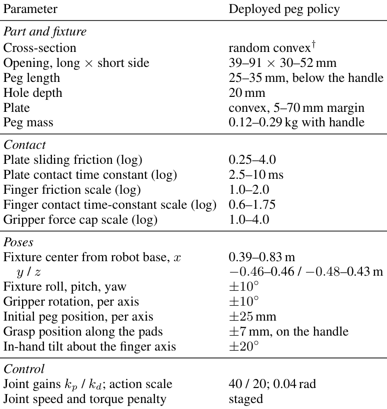
展开第 16 页原版整页（含全部图表、公式与页眉页脚）
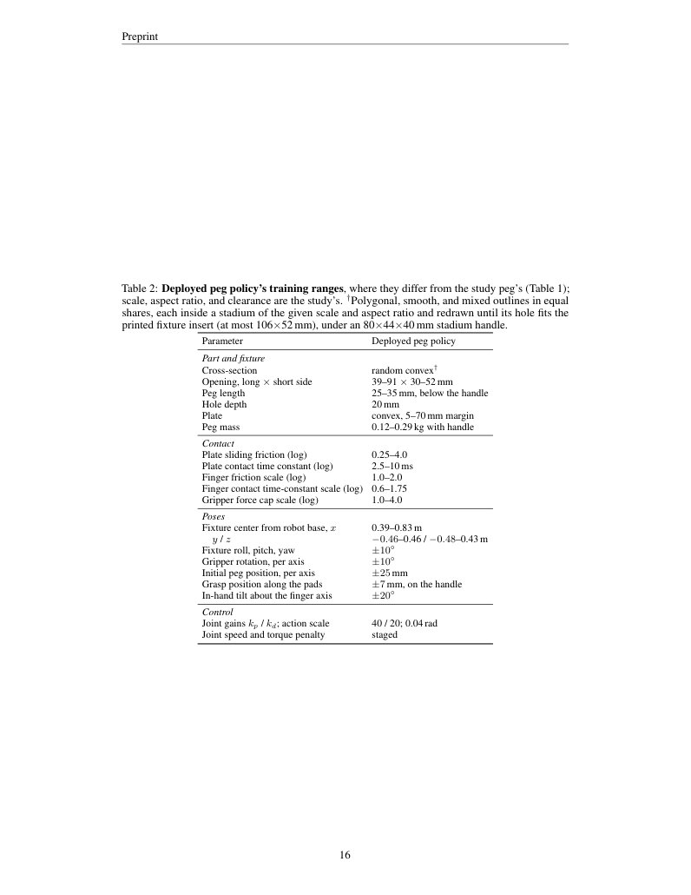
第 17 页Page 17PDF p.17
Full-range gear and nut policies. The gear and nut probes of section 3.2 use policies trained on the full ranges. Gears have a module of 2–3.5 mm and 12–28 teeth, pressure angles of 20–25\(^\circ\), tooth widths of 0.44–0.48 of the pitch, face widths of 8–15 mm, 0.2–0.6 mm of backlash per anchor, and 0.5–1 mm of bore clearance, on 4–6 mm shafts 3–10 mm above the gear; with the boss they weigh 128–276 g, set by their geometry. Nuts are 870 ISO metric nut and bolt pairs, M24–M42 at coarse and fine pitch, with 0.05–0.2 mm of flank clearance, across flats and heights within 10% of ISO 4032, and steel masses of 73–855 g. Their contact and pose ranges are wider too: anchor-tooth friction 0.2–1.0, thread friction 0.2–0.4, and the deployed peg policy’s plate, finger, gripper, fixture, and gripper-rotation ranges. Gears start a median 12 mm off the shaft axis; nuts start a median 19 mm off the bolt axis and 60–170\(^\circ\) of turning short of the thread catching. With deterministic actions, the gear policy succeeds in 98% of 8,192 episodes on 4,096 unseen gear sets drawn from its training distribution, and the nut policy in 93% of 8,192 episodes on 512 unseen nut and bolt pairs drawn likewise.
全范围齿轮与螺母策略。3.2 节中的齿轮和螺母探针使用在全范围上训练的策略。齿轮模数为 2–3.5 mm，齿数为 12–28，压力角为 20–25\(^\circ\)，齿厚为齿距的 0.44–0.48，齿宽为 8–15 mm，每个固定齿轮有 0.2–0.6 mm 的侧隙，内孔间隙为 0.5–1 mm，安装在齿轮上方高出 3–10 mm 的 4–6 mm 轴上；加上凸台，其重量由几何形状决定，为 128–276 g。螺母包括 870 组 ISO 公制螺母与螺栓对，规格为粗牙与细牙的 M24–M42，齿侧间隙为 0.05–0.2 mm，对边宽度与高度在 ISO 4032 标准的 10% 以内，钢制质量为 73–855 g。它们的接触和位姿范围同样更宽：固定齿轮轮齿摩擦力为 0.2–1.0，螺纹摩擦力为 0.2–0.4，并采用部署销钉策略的平板、手指、夹爪、夹具以及夹爪旋转范围。齿轮起始位置偏离轴线的中位数为 12 mm；螺母起始位置偏离螺栓轴线的中位数为 19 mm，且比螺纹咬合所需的旋转量少 60–170\(^\circ\)。在采取确定性动作时，齿轮策略在其训练分布中抽样的 4,096 个未见过的齿轮组上，在 8,192 个 episode 中取得了 98% 的成功率；螺母策略在同样方式抽样的 512 对未见过的螺母与螺栓对上，在 8,192 个 episode 中取得了 93% 的成功率。
B COLLISION BENCHMARK DETAILS
B 碰撞基准测试细节
Table 3: Passive probes. Errors are in micrometers of wall position; negative values mean that phantom material stopped the peg early.
表 3：被动探针。误差以孔壁位置的微米数表示；负值表示虚影材料（phantom material）使销钉提前停止。
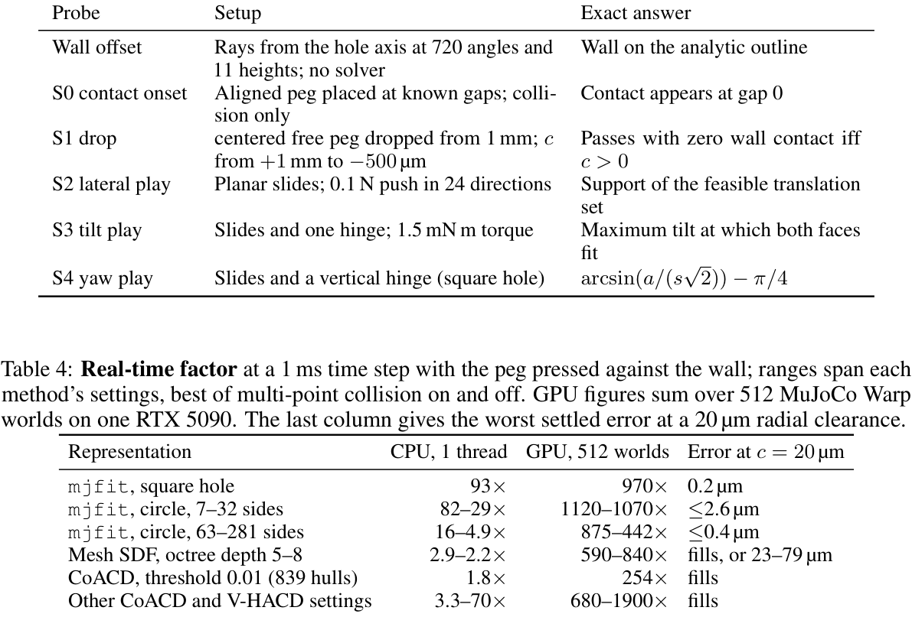
Table 4: Real-time factor at a 1 ms time step with the peg pressed against the wall; ranges span each method’s settings, best of multi-point collision on and off. GPU figures sum over 512 MuJoCo Warp worlds on one RTX 5090. The last column gives the worst settled error at a 20 µm radial clearance.
表 4：销钉压在壁面上、时间步长为 1 ms 时的实时倍率；范围涵盖各方法的不同设置，取开启和关闭多点碰撞中的较优者。GPU 数据为单张 RTX 5090 上 512 个 MuJoCo Warp 仿真世界的总和。最后一列给出了 20 µm 径向间隙下的最差稳定误差。
All scenes use a 1 ms time step, the implicit-fast integrator, the Newton solver, \(\mathrm{solref}=(2\,\mathrm{ms},1)\), \(\mathrm{solimp}=(0.99,0.999,0.001)\), \(\mu=1\), and zero margin. Baselines receive an exact, watertight plate mesh (the circle tessellated at 1,024 segments, 0.04 µm sagitta), and ground truth uses the analytic circle, so mjfit is charged for its own chord error. The peg is always an exact MuJoCo primitive, so every difference comes from the hole. Timings come from one idle machine (Intel i9-13900KS, NVIDIA RTX 5090). Warp contact and constraint buffers are calibrated per representation, and every GPU run is checked for buffer overflow, which would silently drop contacts. At a 2 ms contact time constant, frictionless drops let pegs up to 20 µm oversize slip in for every method, including exact geometry, so S1 cannot resolve geometric errors below about 20 µm; the play probes can.
所有场景均使用 1 ms 的时间步长、implicit-fast 积分器、Newton 求解器、\(\mathrm{solref}=(2\,\mathrm{ms},1)\)、\(\mathrm{solimp}=(0.99,0.999,0.001)\)、\(\mu=1\) 以及零安全裕度。基准方法接收精确的水密平板网格（圆形细分为 1,024 段，矢高为 0.04 µm），而真实值采用解析圆，因此 mjfit 会计入自身的弦误差。销钉始终为精确的 MuJoCo 几何基元，因此所有差异均来自于孔。耗时测定来自一台空闲机器（Intel i9-13900KS，NVIDIA RTX 5090）。Warp 接触与约束缓冲区针对每种表示方式进行了校准，且每次 GPU 运行都会检查缓冲区溢出（溢出会静默丢弃接触点）。在 2 ms 的接触时间常数下，对于包括精确几何在内的所有方法，无摩擦自由下落都会使过盈量达 20 µm 的销钉滑入，因此 S1 无法分辨约 20 µm 以下的几何误差；而游隙探针则可以。
Setup. The round and square holes are 16 mm wide in a 15 mm plate, with radial clearance \(c\) from 20 to 200 µm; at \(c=20\) µm, \(2c/D=0.0025\). The M10\(\times\)1.5 bolt and nut have flank clearance \(c\) of 20 and 100 µm and are probed for axial, radial, and tilt play and for screwing under load. CPU times
实验设置。圆孔和方孔的宽度为 16 mm，位于 15 mm 厚的平板中，径向间隙 \(c\) 为 20 至 200 µm；在 \(c=20\) µm 时，\(2c/D=0.0025\)。M10\(\times\)1.5 螺栓和螺母的齿侧间隙 \(c\) 分别为 20 和 100 µm，并对其轴向、径向和倾斜游隙以及受载拧入进行了探测。CPU 耗时
展开第 17 页原版整页（含全部图表、公式与页眉页脚）
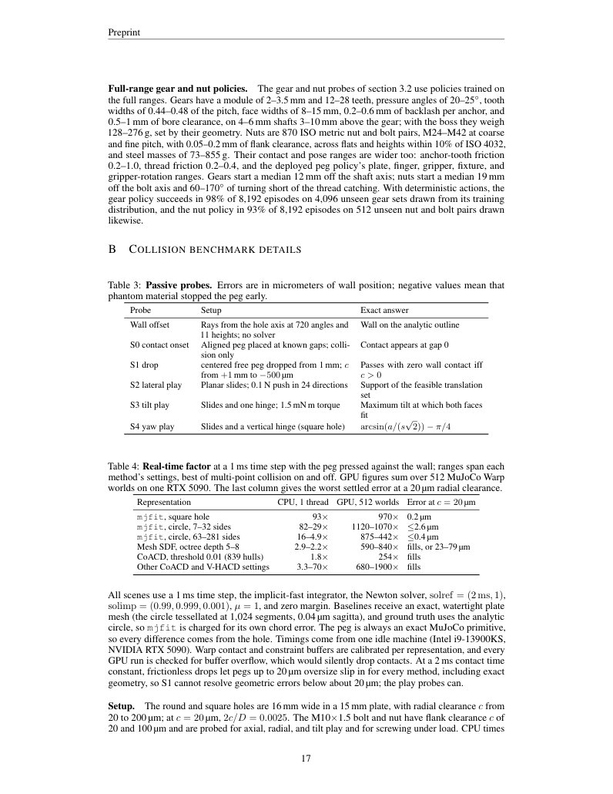
第 18 页Page 18PDF p.18
use one environment on one thread; GPU times use 512 MuJoCo Warp worlds, except in figure 6b, which uses 256 and measures the error on Warp as well.
在单线程上使用单个环境；GPU 耗时则使用 512 个 MuJoCo Warp 仿真世界，图 6b 除外，后者使用 256 个环境且同样在 Warp 上测量误差。
C ADDITIONAL RESULTS
C 额外结果
Training: stadiums Unseen: random convex (dashed: matching stadium box)
训练：跑道形 未见：随机凸形（虚线：匹配的跑道形外接框）
Figure 13: Study peg cross-sections, to scale. The study policies train on stadiums; the unseen random convex pegs used only for evaluation have one vertex on each side of a matching stadium’s bounding box and the same clearance.
图 13：研究销钉截面，按比例绘制。研究策略在跑道形上训练；仅用于评估的未见随机凸形销钉在匹配跑道形外接框的每条边上各有一个顶点，并具有相同的间隙。
Table 5: In-distribution behaviour (sections 3.1 and 3.2), from 8,192 episodes per seed, averaged over both seeds (success, time, rate), and from the 3,964 of 4,096 matched starts where both seed-1 policies succeed (travel, engagement, tilt). Medians unless stated; insertions per minute count every attempt, with failures at their full 5 s. Starts lie a median 10 mm from the hole center.
表 5：分布内行为（3.1 和 3.2 节），数据来自每个种子 8,192 个 episode，在两个种子上取平均值（成功率、耗时、速率），以及在 4,096 个匹配起始位姿中种子 1 的两个策略均成功的 3,964 个样本（移动距离、进入深度、倾角）。除特别说明外均为中位数；每分钟插入次数计入每次尝试，失败按完整的 5 s 计算。起始位置距离孔中心的中位数为 10 mm。
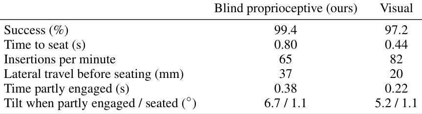
Behaviour. The blind policy travels farther than the visual policy from 99% of matched starts (Table 5). On unseen random convex pegs, the blind policy succeeds in 36.2% of episodes and the visual policy in 3.9% (both seeds); these pegs have a median 53% of the matching stadium’s area. Speed on gear meshing and nut threading. On the in-distribution episodes of the study policies of figure 11 (8,192 per policy, one seed, deterministic actions), counting successful episodes only, the blind gear policy succeeds in a median 0.58 s against the visual policy’s 0.64 s, and takes longer on 43% of the 8,059 starts from which both succeed. Plausibly, the held gear hides the shaft from the wrist camera while it aligns, so visual policies also have to search. The blind nut policy succeeds in a median 0.76 s against 0.64 s, and takes longer on 98% of the 8,139 starts from which both succeed (by a median 0.10 s).
行为表现。在 99% 的匹配起始位置下，盲策略的移动距离均长于视觉策略（表 5）。在未见的随机凸形销钉上，盲策略在 36.2% 的 episode 中成功，而视觉策略仅在 3.9% 中成功（两个种子的均值）；这些销钉的面积中位数为匹配跑道形面积的 53%。齿轮啮合与螺母拧入的速度。在图 11 研究策略的分布内 episode 中（每个策略 8,192 个，单个种子，确定性动作），仅统计成功的 episode，盲齿轮策略的中位成功耗时为 0.58 s，相较于视觉策略的 0.64 s，且在两者均成功的 8,059 个起始位置中，盲策略在 43% 的情况下耗时更长。合乎情理的是，在对准过程中，夹持的齿轮会遮挡腕部相机对轴的视野，因此视觉策略也不得不进行搜索。盲螺母策略的中位成功耗时为 0.76 s，相较之下视觉策略为 0.64 s，且在两者均成功的 8,139 个起始位置中，盲策略在 98% 的情况下耗时更长（中位数差值为 0.10 s）。
Contact supervision. Without the contact loss (section 2.3), the blind policies still learn all three tasks, but need 2.7 (peg), 3.8 (gear), and 5.1 (nut) times as many environment steps to reach 90% training success (figure 14). The unsupervised peg policy reaches 97.8% after 486M steps; the supervised policies pass 99% by 242M.
接触监督。在没有接触损失（2.3 节）的情况下，盲策略仍能学会所有三个任务，但要达到 90% 的训练成功率，所需的环境步数分别是原来的 2.7 倍（销钉）、3.8 倍（齿轮）和 5.1 倍（螺母）（图 14）。无监督的销钉策略在 486M 步后达到 97.8%；而有监督的策略在 242M 步时便已超过 99%。
Probe details. The search modes are split at 5 mm from the opening, and an inside peg is stuck when it progresses less than 0.5 mm in 0.2 s. The probe uses the deployed policy (section 3.4). We roll it out in 1,536 worlds of its training distribution (1.15M states), train the probes on even-numbered worlds, and test on odd ones. Balanced accuracy over the seven modes is 70% (chance 14%) from the history latent, against 56% from the current observation alone and 33% from a randomly initialized encoder. The history latent recognizes lifted, moving, and stuck pegs with 84–90% recall; it decodes far search as near 19% of the time, and near as far 26%. Swapping latents between a searching and an inside state changes the action 1.4–1.9\(\times\) as much as swapping between two states of the same mode; swapping between near and far changes it 0.99–1.11\(\times\) as much (figure 15a). On the robot, we run the policy in 30 further trials on peg I3 (figure 12); its actions recomputed from the logged observations match the logged ones to within \(2\times10^{-5}\). At the end of successful trials, the peg pose estimated from the joint encoders and planned grasp is a median 6.6 mm (10th–90th percentile 2.6–17.4 mm) from the seated pose, as the peg slips and turns in the fingers, and places only 3% of their states fully
探针细节。搜索模式以距开孔 5 mm 处进行划分，处于孔内的销钉若在 0.2 s 内前进小于 0.5 mm 则视为卡滞。该探针使用部署的策略（3.4 节）。我们在其训练分布的 1,536 个仿真世界中 rollout 该策略（1.15M 个状态），在偶数编号的世界中训练探针，并在奇数编号的世界中进行测试。基于历史潜在向量在七种模式上的平衡准确率达到 70%（随机概率为 14%），相比之下仅根据当前观测为 56%，而随机初始化的编码器仅为 33%。历史潜在向量能以 84–90% 的召回率识别抬起、运动中和卡滞状态的销钉；它有 19% 的概率将远端搜索解码为近端搜索，有 26% 的概率将近端搜索解码为远端搜索。在搜索状态与孔内状态之间交换潜在向量所引起的动作变化幅度，是在同模式的两个状态之间交换的 1.4–1.9 倍；在近端与远端搜索之间交换引起的变化幅度则是 0.99–1.11 倍（图 15a）。在真实机器人上，我们针对销钉 I3 进行了另外 30 次试验（图 12）；根据记录的观测值重新计算的动作与记录的动作在 \(2\times10^{-5}\) 以内吻合。在成功的试验结束时，由于销钉在手指中发生滑动和旋转，基于关节编码器和计划抓取估计的销钉位姿与就位位姿的中位距离为 6.6 mm（第 10 至第 90 百分位数为 2.6–17.4 mm），并且仅将它们状态的 3% 判定为完全
展开第 18 页原版整页（含全部图表、公式与页眉页脚）
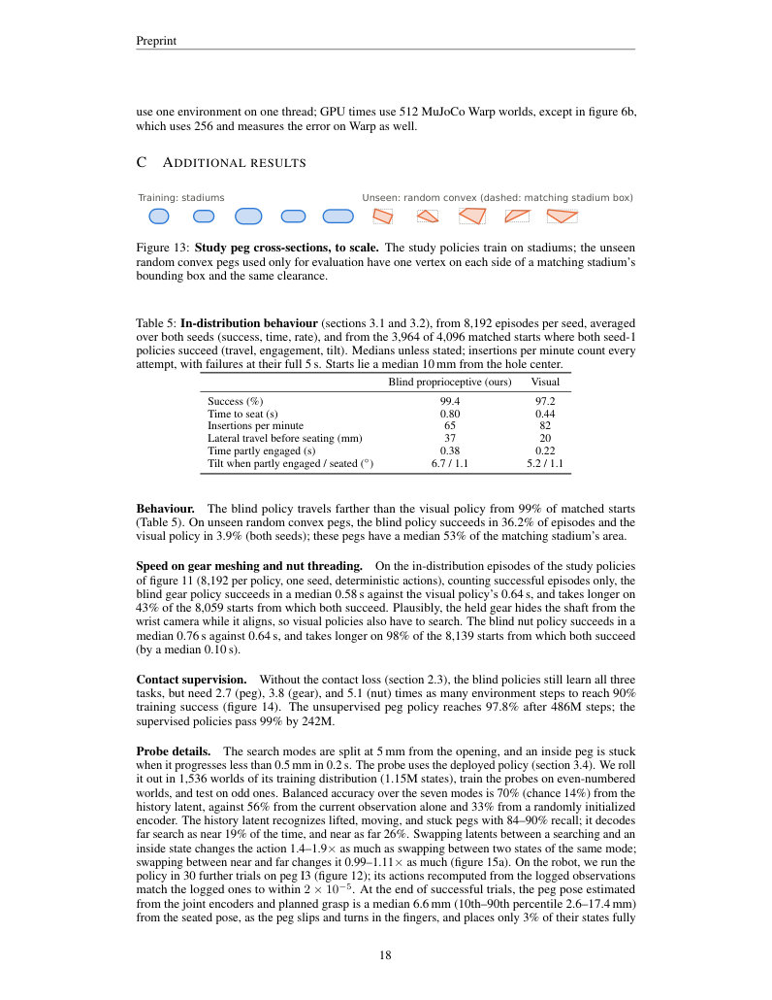
第 19 页Page 19PDF p.19
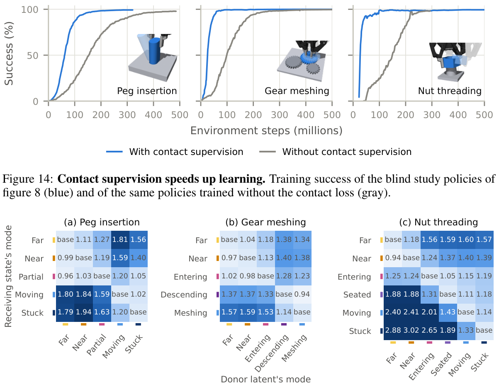
Figure 15: Latent-swap test for the policies of figure 10 in simulation. Each state keeps its own current observation but receives the history latent \(z_t\) of a state in another mode; each cell is the mean change in action relative to a swap within the receiving state’s own mode.
图 15：仿真中针对图 10 策略的潜在向量交换测试。每个状态保留自身的当前观测，但接收处于另一种模式的状态的历史潜在向量 \(z_t\)；每个单元格表示相对于在接收状态自身模式内交换时的平均动作变化量。
inside the hole. Scored states have every point of the peg’s bottom edge at least 3 mm above the plate (lifted) or at least 3 mm inside the opening (inside). The estimate never places the peg clearly above the plate; the probe labels 62% of the inside states correctly, against 100% in simulation from the same start states, and labels the final state of 17 of the 24 successful trials as inside. In figure 10a, true and decoded modes of the start state shown agree in simulation on 74% of steps (median over the 30 start states: 65%).
处于孔内。计分状态要求销钉底边缘的每个点均在平板上方至少 3 mm（抬起）或在开孔内部至少 3 mm（孔内）。该估计从未将销钉判定为明显位于平板上方；探针正确标注了 62% 的孔内状态，而仿真中从相同初始状态出发时的正确率为 100%，并将 24 次成功试验中 17 次的最终状态正确标记为孔内。在图 10a 中，所展示的初始状态的真实模式与解码模式在仿真中有 74% 的时间步达成一致（30 个初始状态的中位数为 65%）。
The gear and nut probes use the full-range policies of Appendix A.2 (PPO updates 3,085 and 2,000) with the same recipe: one episode with deterministic actions in each of 1,536 worlds of held-out geometries from their training distributions (133k and 85k states), probes trained on even-numbered worlds and tested on odd ones. The modes come from the environments’ contact labels and the part’s pose: lifted; off the shaft (gear only; the nut leaves its bolt too rarely to probe); resting on the shaft or bolt tip and searching, far or near (split at the median start distance, 7.2 and 19.7 mm); entering, with the tip inside the bore but not yet captured; for the gear, descending the shaft before its teeth reach the anchors, then meshing, with its teeth on the anchors’ tops or in mesh; for the nut, seated on the bolt before the thread catches, then threading, or stuck when it advances less than 0.05 pitch in 0.2 s. Balanced accuracy over the seven modes is 61% for the gear and 73% for the nut (chance 14%), against 41% and 64% from the current observation and 29% and 46% from a randomly initialized encoder; near search is decoded as far 42% and 31% of the time. Swapping latents between a searching and an engaged state changes the action 1.3–1.6 × (gear) and 1.4–3.0 × (nut) as much as swapping between two states of the same mode; swapping between near and far changes it 0.97–1.04 × and 0.94–1.18 × as much (figure 15b, c). The start states shown come from a re-run of each rollout, decoded with the same probes and rendered from the same states. Among the episodes that end engaged and visit at least five modes, the nut’s agrees with the true modes on 74% of steps (the median), and the gear’s on 79% (the 75th percentile; median 69%).
齿轮和螺母探针采用附录 A.2 的全范围策略（PPO 更新步数分别为 3,085 和 2,000），使用相同的流程：在其训练分布保留的未见几何形状的 1,536 个仿真世界中各运行一个采取确定性动作的 episode（分别为 133k 和 85k 个状态），在偶数编号的世界中训练探针并在奇数编号的世界中测试。各种模式根据环境的接触标签和零件的位姿划定：抬起；脱离轴（仅齿轮；螺母脱离螺栓的情况极少，无法探测）；搭在轴或螺栓尖端并进行搜索，分为远端或近端（以起始距离中位数 7.2 和 19.7 mm 划分）；进入中，即尖端位于内孔中但尚未被捕获；对于齿轮而言，轮齿到达固定齿轮前沿轴下降，随后啮合，此时轮齿位于固定齿轮顶部或处于啮合状态；对于螺母而言，在螺纹咬合前就位于螺栓上，随后拧入，若在 0.2 s 内前进小于 0.05 个螺距则为卡滞。在七种模式上，齿轮的平衡准确率为 61%，螺母为 73%（随机概率为 14%），而仅根据当前观测分别为 41% 和 64%，随机初始化的编码器分别为 29% 和 46%；近端搜索分别有 42% 和 31% 的概率被解码为远端搜索。在搜索状态与进入状态（engaged state）之间交换潜在向量引起的动作变化幅度，是在同模式两状态间交换的 1.3–1.6 倍（齿轮）和 1.4–3.0 倍（螺母）；在近端与远端之间交换引起的变化幅度则是 0.97–1.04 倍和 0.94–1.18 倍（图 15b、c）。所展示的起始状态来自于每个 rollout 的重新运行，使用相同的探针解码并根据相同的状态渲染。在最终处于进入状态且经历至少五种模式的 episode 中，螺母的解码模式与真实模式在 74% 的步数上一致（中位数），齿轮在 79% 的步数上一致（第 75 百分位数；中位数为 69%）。
展开第 19 页原版整页（含全部图表、公式与页眉页脚）
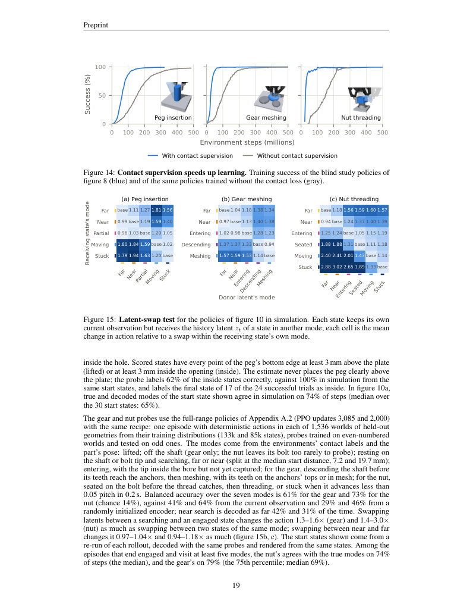
第 20 页Page 20PDF p.20
Unseen parts. Each unseen part of figure 11 widens one property of the part beyond its study training range (Table 1) while every other range stays at its study value. Table 6 lists the widened ranges for each task, grouped as in the figure: a tighter fit; a mild and a strong change of the part’s proportions; a mild and an extreme change of size, on both sides of the training range; and a new shape. Table 7 lists every bar.
未见零件。图 11 中的每种未见零件都将零件的一项属性拓宽到其研究训练范围（表 1）之外，而其他所有范围则保持为其研究设定值。表 6 列出了每个任务拓宽后的范围，分组方式如图所示：更紧密的配合；零件比例的轻微改变与剧烈改变；训练范围两侧尺寸的轻微改变与极端改变；以及全新形状。表 7 列出了每个柱条的数据。
Table 6: Unseen parts of figure 11. Each row widens one property beyond its study training range (first row of each group); the bar’s name in the figure is in italics where it differs by task. Size bins pool parts smaller and larger than training.
表 6：图 11 中的未见零件。每一行都将一项属性拓宽到其研究训练范围之外（每组的第一行）；在不同任务名称不同的情况下，图中柱条的名称采用斜体。尺寸区间汇总了小于和大于训练尺寸的零件。
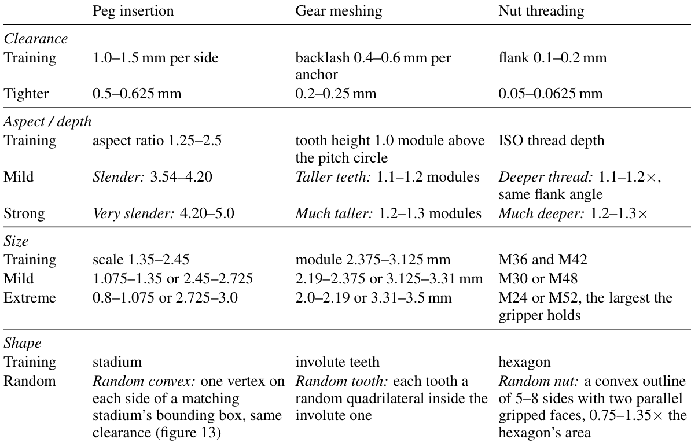
Table 7: Success on unseen parts (%), every bar of figure 11; Table 6 names each task’s columns. Peg insertion is the mean over two training seeds per policy; gear meshing and nut threading are one seed. Both policies have a 30-step history. Best per task and column in bold.
表 7：在未见零件上的成功率（%），对应图 11 的每个柱条；表 6 列出了各任务列的名称。销钉插入为每个策略两个训练种子的均值；齿轮啮合与螺母拧入为一个种子。两种策略均具有 30 步的历史记录。每个任务和每列的最佳表现以粗体表示。
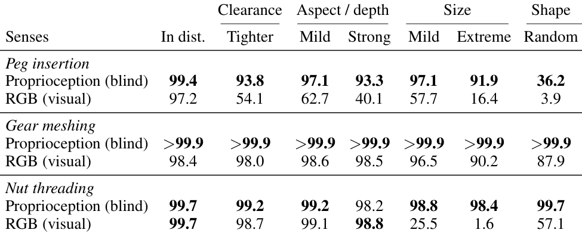
Real-world pegs. The pegs of figure 12 are 3D printed under an 80 × 44 mm stadium handle 40 mm tall, except H, whose handle is 70 mm tall; they weigh 147–164 g, and every hole is 20 mm deep. I1–I5 are cross-sections drawn from the deployed policy’s training distribution (polygonal, smooth, and mixed outlines) with 1.11–1.49 mm of clearance per side. C is a polygonal peg with 0.5 mm of clearance; L enlarges a training outline by 1.28 × 1.09 to a 101 × 37 mm hole; H puts a mixed outline under the taller handle. Each peg has 30 planned resets, and each reset counts once, by its first attempt
现实世界中的销钉。图 12 中的销钉是在 80 × 44 mm、高 40 mm 的跑道形把手下方 3D 打印而成的，但 H 除外（其把手高 70 mm）；销钉重 147–164 g，每个孔深 20 mm。I1–I5 是从部署策略训练分布中抽样的截面（多边形、光滑和平滑混合轮廓），单侧间隙为 1.11–1.49 mm。C 是具有 0.5 mm 间隙的多边形销钉；L 将一个训练轮廓放大 1.28 × 1.09 倍以适配 101 × 37 mm 的孔；H 则将混合轮廓置于更高的把手下。每个销钉计划进行 30 次重置，每次重置仅计入一次，依据其首次尝试
展开第 20 页原版整页（含全部图表、公式与页眉页脚）
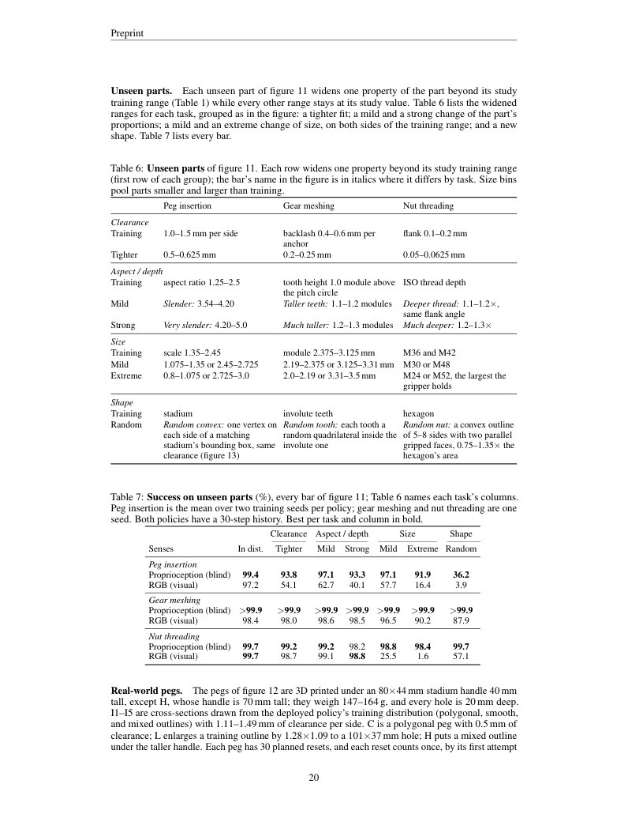
第 21 页Page 21PDF p.21
that reached a verdict: the operator’s success or failure, or the 20 s horizon, which counts as a failure. Each simulated rate is the same policy over 2,048 worlds of that peg’s geometry at the same 20 s horizon, with deterministic actions.
得出判定的结果：由操作员判定成功或失败，或者达到 20 s 的时域上限（计为失败）。每个仿真成功率均指相同策略在具有该销钉几何形状的 2,048 个仿真世界中、在相同的 20 s 时域上限下采取确定性动作测得。